| [西尾維新] 刀語04 | |
| 西尾維新 | |
| (2015) | |
|
刀語 第四話 薄刀・針
西尾維新
|
底本データ
一頁16行 一行42文字 段組１段
「ツルギ」、以後「ツルギ」に置換え注略。
「そいつを倒せば、俺が日本最強になれるってことだろ？」
〝日本最強〟の堕剣士・錆白兵から
叩きつけられた挑戦状！
無刀の剣士・鑢七花と奇策士・とがめは、
薄刀『針』を所有する錆から、その刀と、
日本最強の称号を奪い取ることは
できるのか──？
伝説の刀鍛冶・四季崎記紀が完成させた
〝刀〟は十二本──残るは九本！
刀語、第四話の対戦相手は、日本最強の
称号をほしいままにする錆白兵！
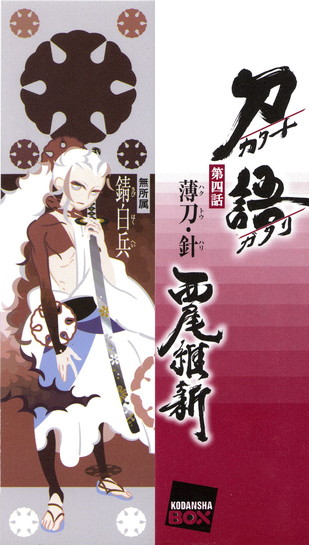
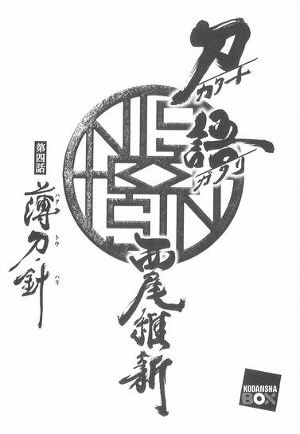
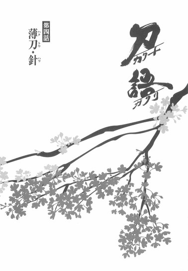
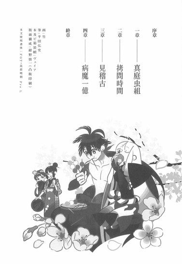
序章
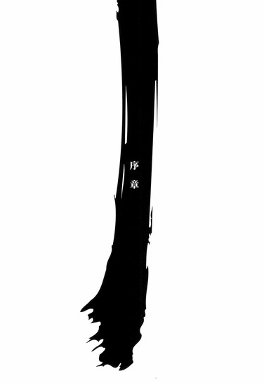
■ ■
真庭忍軍十二頭領、真庭蝙蝠から絶刀『鉋』。
下酷城城主、宇練銀閣から斬刀『鈍』。
三途神社の長、敦賀迷彩から千刀『ツルギ』。
あの旧将軍が全精力を費やしてもなお集められなかった、伝説の刀鍛冶、四季崎記紀の作りし完成形変体刀十二本を、わずか三ヵ月の間に三本も蒐集することに成功した奇策士とがめと、その従者、虚刀流七代目当主鑢七花は、出雲を去ろうという時点では、そこでいったん幕府の中枢である尾張城に戻る予定にしていたが──
一ヵ月後の卯月中ごろ。
二人は現代でいう山口県東部──周防の外れのとある小さな村にいた。宿場でもなんでもない、漁業を主ななりわいとした村──むろん、旅籠などあるわけもない。幕府の威光が通用するかどうかも怪しい田舎町なので、二人はあえて素性を明かすことなく、定住地を持たぬ通りすがりの旅芸人として、頼み込む形で村長一家の納屋に泊めてもらっていた。とがめの異彩を放つ白髪に豪華絢爛極まりない衣装、七花の人並み外れて大きな、しかし細く鍛えられた肉体は身分を旅芸人と偽るにはうってつけで、これからもこういうときはこの手で行こうとひそかにとがめが決めたほどだった。
夜半。
村長の好意で（その村長は人を疑うことを知らないような、善良さだけで村長の座を勝ち取ったと思える今時珍しい人物だった）借りたむしろの上で七花が目を閉じていると、からりと納屋の戸が開く音がした。
とがめが外出から戻ってきたのだ。
「しちりん、起きろ」
「寝てないよ」
声をかけられ、目を開ける七花。実際、目を閉じていただけで七花は眠っていない──刀である自分は、持ち主のとがめが戻る前に眠るほど、図太くはない。なに、寝転んでいるだけでも体力は回復するのだ。
とがめを待っていたのである。
「そうか。ならばよい──」
後ろ手で戸を閉めて、そのまま七花のそばにまで来、すぐ隣に寝転がるとがめ。七花はとがめのその行動を先読みし、とがめの頭が床に着く前に、その隙間に自分の腕を差し込んだ。腕枕というにはいささか鍛えられ過ぎている七花の肉体だが、別にとがめは文句を言うでもなかった。
「あー......疲れた」
「みたいだな。まったく、言ってくれればおれだって手伝うのに」
「ふん。これはわたしの領分だからな。しちりんの手を借りるわけにはいかんわ」
強がりの言葉にも、少し覇気がなかった。
どうやらそれくらい、疲れているようだ。
......ちなみに『しちりん』とは、つい先ごろ決定した、鑢七花の愛称である。詳しい経緯は省略させてもらうが、おおよそ二巻冒頭部と同じようなやり取りがあった末に決定したと思ってくれればいい。一方的に決定されたその愛称に対し、もちろん七花は思うところはいろいろあったが（「おれは炭を燃料に使う土製の焜炉かよ！」）、今のところ、逆らわずに受け入れている。まあ、とがめのことだから、たぶんそのうち飽きるだろうと思っているというのもあるが。
ともあれ、誰も来ないような無人島の掘っ立て小屋で育った七花はともかくとして（むしろ七花にしてみれば、まだこの納屋のほうが育った小屋よりも上等なくらいだ）、生まれは強大な大名の娘であり、現在は幕府の直轄幹部級、預奉所の総監督であるとがめがこのような野宿まがいの宿泊を自らに許すというのは、意外と言えば意外なようだったが──事実、七花はらしくもなく、そこに関してはとがめを気遣ったが──とがめのほうは、割かし平気そうだった。
まあ、大名の娘から幕府の直轄幹部に至るまでの途中経過──彼女がいったいどのような道程を歩んできたのかを軽く想像すれば、それは取り立てておかしいことでもないのかもしれないが。
いずれ、目的のためには手段を選ばない女である。
「明日の朝、村長に挨拶したら出発するぞ」
「ん？」
「明日の朝だ」
「ふうん......」
しばらく休んでから発せられたとがめの言葉に、驚いた風に反応する七花。
「意外と早いな。しばらくはここで根を張って、報告を待つんじゃなかったのか？その──錆白兵って奴のこと」
「探るまでもなかった──らしいぞ」
「はい？一
「先日尾行者に気付き、あろうことか堂々と、果たし状を渡してきたようだ──そういう展開になってしまうと、わたしとしては錆はわざと尾行させていたのではないかと睨まざるをえんな。よっと」
ゆっくりととがめは起き上がり、懐から一通の書状を取り出す。特に仰々しい風もなく、それを七花に渡して、とがめは納屋の端のほうに移動し、着物の帯を解き始めた。外回りでくたくたになったから、とりあえずの休憩としてまず横になっただけで、そのまま眠るつもりだったわけではないらしい。考えてみれば、とがめの格好は眠るには適さない──本来ならばそれは歩くにも適さないほどの度を越えた厚着なのだ。室内、それも就寝時となれば、さすがに脱ぐ。
「ふうん。果たし状ね。果たし状か。前に聞いた話じゃ、最近はそういうの、珍しいんじゃなかったか？」
「錆は古風な男であるゆえにな。まあ読んでみよ」
「と言われても、おれは平仮名は読めんのだ」
「ああ、そうだったか」
重ね着を次々脱いでいくとがめ。
夜とは言え、月明かり星明かりで納屋の中は結構明るかったが、十二単衣のごとき厚着を順序通りに脱衣するとがめの仕草に、照れや恥じらいの気配は見受けられない。奇策士と虚刀流七代目当主との旅も都合四ヵ月目、最初はそれなりにきっちりけじめをつけていた公私にまつわるそういう線引きも、打ち解けすぎてなんだかもう適当かつおざなりになってきている感じだった。
「しちりんー」
「なんだ」
「髪がもつれる。持ち上げておいてくれ」
「はいはい」
言われるがままにむしろから身を起こし、脱衣中のとがめに近付いていって彼女の白髪を軽くまとめ、持ち上げる七花。
............。
腑抜けているとさえ言える光景だった。
ともあれ。
この場合、それこそ途中経過はともかくとして、高貴な生まれであり、また現在も幕府内においてそれなりに高い身分のとがめの従者に対する振る舞いとしては、あながち間違いとは言えないのかもしれないが、七花が抵抗もなく、また劣情を催すでもなく当たり前にしているというのは、真面目に不自然かもしれない。
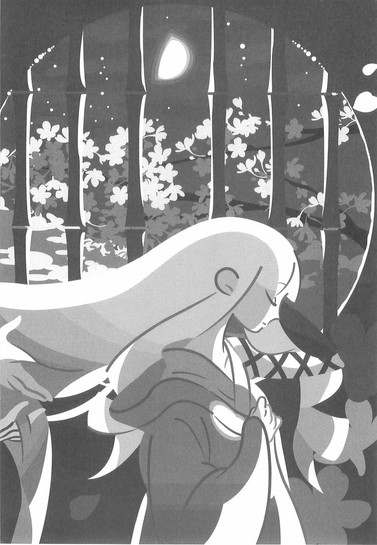
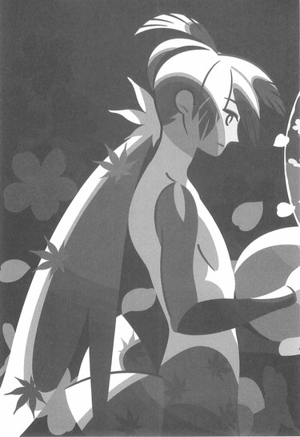
無人島育ちというだけでは、実際は性欲がない理由にならないだろうに。
しかし、だからこそ──と、とがめは考える。
だからこそ。
最初の真庭蝙蝠、二番目の宇練銀閣はわかるが──だからこそ七花は、三番目の敵である敦賀迷彩を、蝙蝠や銀閣と同じように、殺してのけたのだろう。
どんな人間であれ──同性に対するときと異性に対するときとでは、接し方が変わる。それは剣士が人を斬るときでも然りだ。男を斬るときと同じように女を斬れる剣士はいない──と、少なくとも先月まで、とがめはそう考えていた。
異性を殺すのに抵抗を覚える者。
異性を殺すのに興奮を覚える者。
極端に言えば、誰もがこのふたつのどちらかに分類される。
しかし七花は違った。
どちらでもなかった。
前のふたりと同じように──迷彩を殺した。
極端と言うなら、それこそ極端だ。
その理由を七花の性欲のなさ──でなくとも、薄さに求めるのは、それほど真相を外した推理でもなさそうだ。変体刀、残り九本の所有者が男性ばかりとは限らない以上、それはとがめにとっては朗報に近い情報ではあるのだが──
そうなると、新しい疑問も出てくるのだった。
男女を区別しない。男女にこだわらない。
それならばこの男──この刀。
わたしの、いったいどこに惚れたのだろう？
「で、この果たし状には何て書いてあるんだ？」
「長々と、丁寧な言葉で己の主張をしたためておるが、そなたにもわかるように文意を要約するとこうだ──『四季崎記紀の刀を賭けて勝負だ』」
「まっすぐだな」
「ああ」
「それだけに、にわかには信じがたいよな。聞けば聞くほどおかしな話だぜ。そんな古風でまっすぐな男が、とがめ──ひいては、忠義を尽くすべき対象である幕府を、刀欲しさに裏切っただなんて」
日本最強の剣士、錆白兵。
とがめが刀集めの旅を決行するにあたって、七花の前に雇っていた剣士である──現在は堕ちに堕ちて、堕剣士というべきか。
しかし、それでもなお──彼は剣聖なのである。
「錆が剣士であればあるほど、四季崎記紀の刀の毒は有効に作用する。有効に、そして深刻に──深く、深くな。そういうことだ」
「はあん」
「まあ、四季崎記紀の刀を所有するその前から、錆は剣士であり、剣士であり過ぎるがゆえに、人らしさをほとんど失った男だったからな──この現状は当然というか、無理からぬのかもしれぬが」
出雲の関所を抜けようという頃、ふたりの下に、幕府からの遣いの者が現れた──真庭忍軍の裏切りによってすっかり幕府内での信用を落としている、公儀隠密の男だった。
その男が言うには、錆白兵の行方がつかめたというのだ──公儀隠密は、とがめの所属する軍所とは別に、裏切り者の錆白兵探しに躍起になっていたらしい。巻き添えで失墜した信用を少しでも回復しようと、彼らも必死なのだろう。
ただし、行方が知れたところで、錆白兵が完成形変体刀の一本、薄刀『針』を所有している以上、刀探しの全権を委任されているとがめを差し置いて手を出すことはできない。ましてその時点でとがめは、絶刀と斬刀を手に入れ、千刀を入手しようという最中だった──錆退治の役目は、あくまでもとがめに任されるべきものだった。
かくしてとがめと七花の旅の行き先は、京都から因幡、出雲ときて、更に西──錆白兵が潜伏するという周防になったというわけだ。
酉へ西へ──である。
「その内容からすると、おれたちが刀を手に入れていることを、どうやら錆は知っているようだな」
「少なくとも絶刀と斬刀についてはそうであろうな。それに──あれから一ヵ月過ぎておる。千刀のことを知られていたとしても不思議ではない」
「情報ってのはどっからでも漏れるんだね」
「どこにでも口の軽い輩はおるでな。それに、錆くらいの剣士になれば、その腕に心酔し、その役に立とうという者も少なくはあるまい。人脈というのは厄介だ。図抜けた強さというのは、ただそれだけで他人を魅了することもある......錆も伊達に剣聖と呼ばれておるわけではない。正直、わたしとしては、そなたと錆をぶつけるのは、もう少し先にしたかったのだが......ことがこう運んでしまえば、致し方ないな。わたしもできる限り知恵を絞るから──そなたはただひたすらに、全力を尽くせ」
「薄刀『針』ってのは、『軽さ』とか『薄さ』とかを主題に据えた刀ってことだったよな......使い方を誤れば......剣筋の通らない振り方などすればすぐに罅割れて折れてしまう、受け太刀なんてどうしたってできっこない構造の刀......」
「向こう側が透けて見えるほどの薄さだぞ。わたしがいくら言ったところで、実際にその刀身を見ない限り、想像もできぬであろうがな──そなたの言う通り、非常に脆い......しかしそれゆえに、美しい刀だ」
「美しい──ね。刀が鑑賞品なら、それでいいんだろうけれどな──しかし、厄介だぜ。『薄さ』と言うより、そりゃ『弱さ』にこだわった刀とも言えるじゃねえか。そんな刀を折らないように蒐集しなきゃいけないってんだから──」
「こういうことをわたしが言うと少し問題になるかもしれぬが......そなたとしても、今回ばかりは、あまり刀そのもののみにこだわるのはやめたほうがよいぞ。錆白兵とは、それだけの実力を備えた剣士だ......使う刀が薄刀であることなど、奴にとっては負荷でもなければ枷でもない。日本最強の名は、はったりでもなければ酔狂でもないのだ。奴はいつも通りに、あくまでもいつも通りに刀を振るうだけだ。そもそも奴は筋を外した攻撃など繰り出さんし、恐らく受け太刀などしたこともあるまいよ」
「そんなすげえのかよ──最強ってのは」
「見た目こそ、女と見まごうような総髪の美少年だがな。空に浮かぶ太陽ですら真っ二つにすることができるという触れ込みだ。......生まれる時代を間違えた男だよ。もしも先の大乱に参加していれば──いや。戦国の世に生まれていたとしても、なお頂点に立てていたであろう、生粋の剣士だ」
錆白兵が生まれたのは先の大乱のあと──まだはたちそこそこの若者である。そんな若者を、ありていに言って、幕府は──怖れているのだ。役割を横取りされた形になる公儀隠密から見ればまた違うのだろうが、今回の蒐集は、面倒な役割をていよくとがめに押し付けたとも言えなくはない。
もっとも、とがめにしてみれば、裏切り者退治を自ら行なえるというのは、望むところだった──錆退治の役目は、あくまでもとがめに任されるべきもの、である。問題は、ただ、時期なのだ。
結局は──時間の問題である。
七花にもっと実戦を経験させてから、戦わせたかった。
実戦──殺し合いと言えるほどの戦いを、七花は刀集めの三度しか経験していない。七花の実力を疑うような段階では既にないが、しかし四度目の実戦が錆白兵というのは......正直言って、いくらとがめでも戦略の立てようがない。
しかし、この機会を逃すわけにはいかないのだ。
ここで錆を逃すわけにはいかない......錆は完成形変体刀を所有しているのだ。それも、薄刀『針』を。錆の腕前は疑うべくもないが、しかし、あんな脆い刀──何らかのちょっとした事故で、いつ折れてしまっても不思議ではない。錆が少し足を滑らしただけで、それでおしまいである。今この時点まで折れていないことが、既に奇跡なのだ。本来、十二本の中で、間違いなく真っ先に蒐集すべき対象なのである。
「そのような果たし状を渡してきたということは、やはり錆は錆で独自に刀集めを行なっていたということのようだな。刀の毒が、本当によく効いておると見える。だが、隠密の連中の調べでは、錆は薄刀以外の刀の蒐集には成功していないらしい。そこでわたしたちの噂を聞いたのだとすれば、内心、面白く思ってはおらぬであろう。そういう感情を剣威に上乗せさせてくると思うと、果たしてどうすればよいのか......付け込めるとすれば剣聖・剣豪ゆえの、余裕や油断なのだが──」
「とがめ」
脱ぎに脱いで、とがめがようやく襦袢姿にまでなったところで──七花はとがめの言葉を強引に遮って、髪は腕の上に乗っけるようにしてから、鎖骨を握るように、彼女の肩に手を置いた。
「気持ちはわかるが、おれの前で他の刀をそこまで褒めるな──錆がどれだけ最強なのか知らないが、虚刀流だって、一応は最強の剣術をうたってるんだ。おれにだってあんたの刀としての誇りがある。必要以上にその気位を刺激されちゃ困る」
「あ、ああ」
むき出しの嫉妬だった。
七花のこういう幼稚さは御しがたい。逆にそれは、とがめにとっては扱い易さでもあるはずなのだが──ちょっとしたことですぐに感情的になる七花の癖は、いずれ直さなければならない点だと考えていた。
しかしそれも──間に合わなかった。
とにかく準備不足だ。
せっかく、刀集めの旅も順調だったのに──
「......っていうか、鎖骨、鎖骨やばい。鎖骨弱い」
「？」
「だ、だから鎖骨から手を離せ。くてっとなる。くてっとなっちゃう。やめてやめてやめて。お願いだから」
「......？ そんなに強く握ってないぞ。むしろ優しく撫でているくらいの気持ちだ」
「それがむしろまずい......や、やんやんやん」
「やんやん？ なんだそりゃ、大陸に生息する珍しい白黒動物の名前か？大丈夫かよ、なんだか怖いぞ」
「い、いいからおとなしく髪を持ってろというのだ。ほ、本当にやばい。ごめんごめんごめんごめん、謝るから」
不思議そうにしながら、とりあえず言われたようにする七花。
邪気がない分たちが悪い。
「よくわからんなあ、とがめは」
「そなたにだけは言われたくない......まあ、そなたのそういうところが、錆白兵に対してもいいように働けばよいと思う。錆のたおやかな美貌には、男でも呑まれてしまうというからな──」
その姿に、向かい合った相手のほうが逆に油断してしまうということもあるらしい。確かにあの姿を見て──それがそのまま、日本最強だと思う者はいないだろう。実際、奇策士とがめだって、初めて錆と会ったときには、噂というのは尾ひれがつくものだと、そんな風に思ったものだ。
しかし──違った。
錆はまごうことなく日本最強だった。
弱冠二十歳の若さにして──
「しかしよ、とがめ──いいように考えることもできるんじゃないか？そいつが日本最強ってことは、そいつを倒せば、おれが日本最強になれるってことだろう？」
「まあ、そういうことになるにはなるだろうが......そなた、そんな称号が欲しいのか？」
「剣士として──刀として、その称号は確かに魅力的だぜ。それでこそ、あんたの役にも立てようってもんだ」
「ふうん......ちょっと意外だな」
しかしな、ととがめは窘める。
「同じことを言って、錆に勝負を挑み、散っていった命の数は、決して少なくはないぞ──変な欲心を出すよりは、まず生き残ることだけを考えたほうがよい」
「生き残ることって言ってもな──勝たなきゃ、どの道生き残れやしないだろう」
「それはそうなのだが──」
それも、勝てればの話だ。
勝ち負けの問題がそのまま生き死にの問題に直結している。
逃げようという考えがまるでないところを、果たして頼もしいと取るべきなのか、ただのばかだと取るべきなのかは、微妙なところだった。
相手は他でもない、堕剣士だというのに──
「..................」
それは確かに、今道程を共にしている七花に対しては、失礼どころか侮辱にあたることなのかもしれないが──しかしとがめの立場では、どうしても考えてしまう。
考えてしまわざるを得ない。
真庭忍軍の真庭蝙蝠に裏切られ──二番目に雇った錆白兵が、もしも自分を──幕府を裏切ることなく忠実に刀集めに協力してくれていたら──今頃、果たしてどれだけの数の変体刀が集まっているだろう、と。
日本最強の剣力と──自分の知力があれば。
三本か。
それ以下か──それ以上か。
「......よし。髪はもうよいぞ」
「ん」
「帯を結べ」
「はいはい」
最終的に寝間着に着替え終えたところで、ふたりはむしろの上に戻り、腕枕まで同じ姿勢で横になる。寄り添うような体勢には、むろん、護衛の意味もある。
「それで、どうするつもりなんだ？ 果たし合いの申し込みには応じるのか？」
「最低限、表向きには応じぬわけにはいくまい。いくつか手は打つつもりだが......というより、ここに戻ってくるまでに既にいくつか打ってきたが、それも、どれかがあたればいいのになという気休め程度のものだ」
「あたればいいのになって......」
「あとは果たし合いの場所までの道中、考えることにする。何かは思いつくであろう」
「思いつくであろうってのも微妙だが......道中って？ここから、遠いのか？」
「近くはない、それに──船に乗ることになるな」
「船？」
「巌流島だ」
「巌流島......」
「百年以上前、その地で行なわれた長刀と二刀との決戦くらいならば、無刀とはいえ、剣士である以上そなたでも知っておろう。そういうところも──まったく、古風な男だ」
「......つーか、いけ好かねえ野郎だ」
とがめがそれでも錆のことを褒めるから、とうとう拗ねてしまったとも取れる七花のそんな発言をいい切りに、ふたりは眠りにつくことにした。とがめが眠るのを待ってから、七花は意識を落とす。
意識を落とす直前、彼は考えた。
日本最強──錆白兵。
そいつは姉ちゃんよりも強いんだろうか──と。
■ ■
長かったようで短かったこの四ヵ月！
辛かったようで楽しかったこの四ヵ月！
ふたりの旅路も、今回のお話で序盤終了！
長らくのご愛顧ありがとうございました......と言うのはちょっと早い!?
果たして薄刀『針』とは!?
そして日本最強、錆白兵とは!?
突然の急展開に、七花ととがめはどうなってしまうのか──まあ、突然でない急展開なんてないけれど！
ときめきの決着は巌流島！
一度限りの禁じ手行使！
一体全体時代劇！
刀語の第四巻♪
一章 真庭虫組
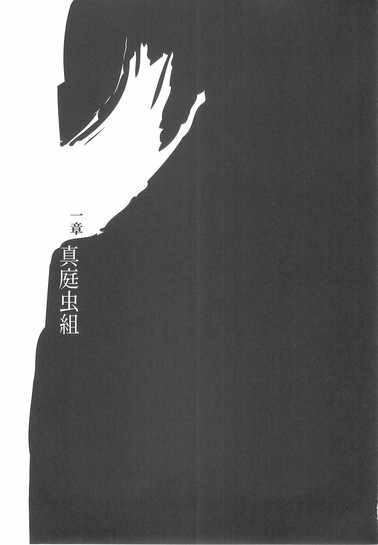
■ ■
見るからに異常な三人組だった。
三人組と言っても、その三人の見た目における共通項というのはせいぜい性別と服装くらいのもので、他は何もかもがばらばらだった。
ひとりは散切頭の小柄な男。
ひとりは長髪を垂らした大柄な男。
ひとりは髪を短く刈り上げた中背の男だった。
目つきも表情も、その全体像から受ける印象も、それぞれに違う──だから共通項は、男という性別と、しのび装束という服装くらいのものだった。
普通のしのび装束ではない。袖が切り落とされていて、その代わりとばかりに、全身に鎖を巻いている──しのび装束としては明らかに異質だし、しかもしのびと言うには、彼らは覆面さえしていない。
ただし──それでも彼らが忍者であることは一目瞭然だった。
三人はとどまっておらず、前へ前へと移動している。その移動する姿こそが──見るからに異常なのだ。
三人の中でもっとも小柄な、散切頭の男。
彼が他のふたりを、左右の肩にそれぞれひとりずつ、乗せて歩いているのである──相手が子供であってもなかなかできることではない、それを自分よりも体格の大きな人間を相手に、平気な顔をしてやっているのである。
前へ前へ。
移動しているのである。
しかし、それだけならばまだ、散切頭の男の怪力ということで、説明をつけられるかもしれない──そんな親切な説明すらをも拒絶するとんでもない要素が、彼らの移動には含まれているのだ。
そこは地上ではない。
彼らは海上を──移動しているのだった。
前へ前へ。
前へ前へ──平気な顔をして。
波も水しぶきも、まったく無視するようにして。
水面を何の道具も使わずに──散切頭の男はふたりの人間を肩に乗せて、歩いていた。
まず右足を水面に踏み出して、その右足が沈む前に左足を踏み出し、その左足が沈む前にまた右足を踏み出す──これを繰り返せば人間は水面を歩くことができるという、子供だましの有名な詭弁があるが、これは、そんな詭弁ですら説明できないような──見るからに異常な状況だった。見るからに異常な、三人組だった。
そんな彼らがしのびでなくて何であろう。
「........................」
「........................」
「........................」
袖を落としたしのび装束。
全身に巻かれた防御用の鎖。
覆面すらしていない。
改めて紹介するまでもなく──真庭忍軍十二頭領の面々だった。
■ ■
かつて奇策士とがめは、暗殺専門の忍者集団、真庭忍軍を称して、『真庭のしのびは集団行動を嫌う──否、集団行動をする意味のない連中揃いだ』というような意味のことを言った。それは尾張幕府、軍所の総監督として、彼らと仕事をする機会の少なくなかった彼女の個人的な感想ではない──とても実際的な感想である。
彼らに集団行動をする意味はない。それはまごうことなき真実である。
ただしそうは言っても、真庭忍軍もあくまで組織である以上、派閥や役割分担が存在しないわけではない──そもそも、そうでなければ、十二人もの頭領が必要なはずがないのだ。真庭の里に所属する百幾十名をまとめるためには、それだけの数の指揮官が必要だということである。
だから十二という単位が真庭忍軍の一番細かいわけかたである──そして十二人の頭領は三人ずつで手を結んでいるのだ。ゆえに真庭忍軍は四つ──四組の派閥に区分されることになる。すなわち。
真庭鳥組。
真庭獣組。
真庭魚組。
真庭虫組。
具体的には、七花の最初の敵として登場した真庭蝙蝠は獣組に属し、宇練銀閣に斬られた真庭白鷺は鳥組に属し、敦賀迷彩に斬られた真庭喰鮫は魚組に属していた。
まあ、『集団行動をする意味のない連中』のことである、これがそこまで厳密な区分であるかと言えばそういうわけでもなく、あくまでも規準のようなものであり、たとえば真庭蝙蝠などは、獣組に属しながら鳥組とも親密な間柄だったりしたものだが──しかし、なかでも真庭虫組の三頭領の強固な結束は、真庭の里では有名だった。案外それを知っていれば、とがめも先にあげたような言葉を吐かなかったかもしれない。
ともかく。
真庭蝶々。
真庭蟷螂。
真庭蜜蜂。
それが、その三人の頭領の名前である。
真庭忍軍──真庭虫組。
「......しかし、何度考えても解せんな」
そんな風に口火を切ったのは、髪を短く刈り上げた中背の男──真庭蟷螂だった。
「四季崎記紀という刀鍛冶の作った変体刀とやらにかかわってから、たった数ヵ月......たった数ヵ月の間に、既に真庭の頭領が三人も命を落としているとは──わたしには少々、信じがたい」
「しかし、確かな情報です」
反対側の肩に座っている、長髪を垂らした大柄な男──真庭蜜蜂は、蟷螂の言葉をそういう風に受ける。三人の中で、この男だけが唯一、帯刀しているようだった。それも忍者刀ではない──立派な大太刀である。
「蝙蝠さん、白鷺さん、喰鮫さんの三人が、ここ三ヵ月で次々と命を落としている──もっと言えば刀の取り合いに敗れて殺されているのは、疑いようもない事実です。僕だって、否定できるものなら否定したいところですけれど......他の六人にしたって、どうしてるんだかわかりません。むろん、滅多なことは言えませんが──」
「蝙蝠どのは、そうは言ってもまだわかるんだけどな」
ふたりを肩に乗せ、波立つ海面を歩いていた、散切頭の小柄な男──真庭蝶々が言う。
「蝙蝠どのは確かに群を抜いて優秀なしのびだったけどよ、如何せんあの人の忍法は使用できる局面が限られていたじゃねえか──状況次第においては、その実力の半分も発揮できねえだろう」
「それに、あのかたは接待好きでしたからね」
蜜蜂が、自嘲のように言う。
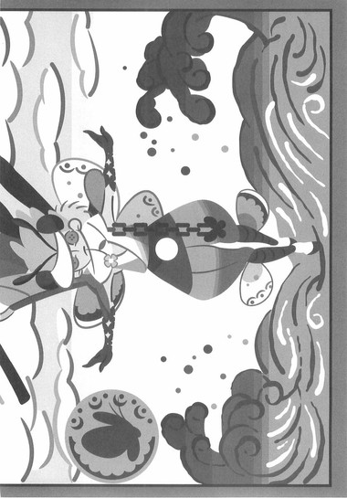
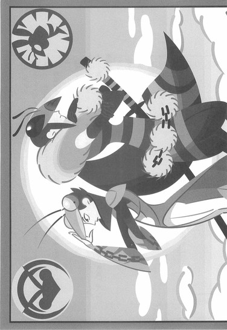
「相手に気持ちよくなってもらうためにわざと負けるということを、普通にやるひとでした。敵であろうと何であろうと、とにかく相手に喜んでもらうことが大好きでしたからね。あるいはそういうお茶目なところに付け込まれたのかもしれません」
「──蝙蝠が死んだ......殺されたことにより、絶刀が奪われたのは、真庭忍軍にとって痛かったな」
蟷螂のそんな言葉を無視するように、「しかしですね」と、蜜蜂は続けた。
「鳥組の白鷺さん、それに魚組の喰鮫さんが、相次いで殺されているというのは恐ろしい話です──蝶々さんもそれが言いたいのでしょう？『逆さ喋りの白鷺』に『鎖縛の喰鮫』が、四季崎記紀の刀集めを始めた途端に──」
「もっと厳密に言っちまえば、虚刀流にかかわった途端に──だな」
蝶々は言う。
「あの小生意気な奇策士が、おれたちの後釜として虚刀流を雇って以来──どうも真庭の里には運が向いていねえようだ」
「......後悔しておるのか？」
そう問いかけたのは、蟷螂である。
「ぬしらは、あのまま──唯々諾々と、尾張幕府の言いなりになる生活を続けていたかったとでも？」
「まさか」
「後悔などしていませんよ」
ほぼ同時に、即答でふたりは答えた。
仲間を三人失いながらも、それは迷いのない口調だった。
「ただし、このままやられっぱなしというのは真庭忍軍の名折れです──奇策士さんは今頃高笑いをしておられるのではありませんか？自分から離れた途端、真庭忍軍は落ち目になったと」
「十二頭領のうち三人までもが殺されているとなりゃあ、そう思われても仕方のねえところではあるんだよな──実際、情けない限りだぜ。しかしすぐに、高々になったその鼻を明かしてやるさ」
「思い違いをするでないぞ、ぬしら。奇策士などわたしらにとっては関係ない──わたしらにとっては問題ない。問題は虚刀流のほうなのだ。蝙蝠の持っていた絶刀は、もともと、一度は奇策士の手元にあったものだからともかくとして──斬刀と千刀を蒐集したその実力は、高く評価せねばならぬであろう」
「虚刀流か──おれは聞いたことがあったぜ。大乱の英雄だよな。あの大乱のときは、おれらの親世代も散々、好き勝手に暴れたもんらしいが──それでも英雄ってほどじゃなかっただろうな」
「しのびが英雄になれる時代なんてありませんよ」
蜜蜂は言った。
「それに蝶々さん──僕らが相手にするのは、大乱の英雄ではありません。あくまでもその息子です」
「若いほうが厄介だぜ。怖いもの知らずだからな──おまえみたいに」
「いえいえ。僕はそれほどの者ではありませんよ──今回も後学のために、おふたりの忍法を見物させてもらいに、ついてきた次第です」
「ふん。しおらしいこと言いおる。いや、しらじらしいこと、か──」
蟷螂が面倒そうに鼻を鳴らす。
「なら、分け前はなしということでいいのだな？虚刀流を倒せば、今なら三本の変体刀が手に入る──それを虫組三人で一本ずつ分け合おうという話であったが、蜜蜂がそういうつもりなら──」
「いや、それとこれとは話が別ですよ」
焦ったように言いつくろう蜜蜂に、軽い笑いが起こる──と、そこで。
海を行く三人の前に、ひとつの島が見えてきた。
小さな島。
しかしその小さな島は──彼らの目的地である。
「お。そろそろですね、蝶々さん──さすがは『無重の蝶々』。人間ふたりを肩に乗せても、この程度の海なら一跨ぎですか」
「何度体験してもおかしな感覚ではあるがな──」
「いや、さすがのおれも疲れてんぜ」
蝶々は弱音のような言葉を吐く。
「目測よりもちょっと遠かったわ。島についたら半刻くらい休ませてもらわねえと、こりゃ厳しい──」
最後のひと踏ん張りとばかりに、蝶々は歩調を速めた──島はどんどん近付いてくる。ある程度まで接近したところで、島にいる者から発見されないようにという配慮だろう、砂浜を迂回するように東から回り込み、断崖絶壁のようになっている箇所から、三人はその島に上陸した。
「では往こう」
真庭蟷螂が言う。
「蝶のように舞い蜂のように刺し蟷螂のように食らう。真庭忍軍真庭虫組──大手を振って、まかり通る」
その島の名は、歴史に名高き巌流島──ではなかった。
地図にすら載っていない、周囲四里ほどのその島には、正式な名などないのだ。かつて旧将軍が行なった刀狩の副産物である、刀大仏のある四国鞘走山清涼院護剣寺と並ぶ、剣士にとっては聖地である巌流島と並べて語ること自体、間違っている。
ただ、その名もなき島をこう呼ぶ者たちはいた──不承島、と。
■ ■
奇策士とがめが刀集めの旅に出た理由については、既に何度も説明した。同様に、錆白兵がそのとがめを裏切ってまで、独自に刀集めを開始したことの理由についても、今のところ、これ以上言葉を重ねる必要はないだろう。
では真庭の里の者が四季崎記紀の完成形変体刀の蒐集に乗り出した理由は？
彼らはしのびであり剣士ではない。四季崎記紀の刀の毒がそこまで有効に作用するわけではない──それに、実際に四季崎記紀の刀を手にしたのは真庭蝙蝠ひとりであり、それだけのことで里の人間全員が幕府を裏切るなどということがあるわけがない。誰かひとりの意思で全てが動くような独裁体制になることのないように、真庭忍軍には指揮官が多数、存在しているのだから。
では理由は。
彼らの裏切りの理由は。
それは──ひとえに金のためである。
一本売れば国がひとつ手に入ると言われる四季崎記紀の刀──それを十二本手に入れることができれば、その合計金額は天文学的に撥ね上がることだろう。金山の巨大鉱床の権利を有するに等しい。
それだけあれば──いや、現実的なことを言えば、手に入れるのは十二本のうち、三本か四本だけでも構わない──真庭の里は救われるのだ。
そう、救われる。
ときは既に戦国の世ではない。
尾張幕府──家鳴将軍家の支配体制は既に百五十年以上続いていて、世はまさに、天下泰平の四文字であらわされる、平和そのもののそれである。この時代──否、現代までも含めた人類史上で、この時代の日本ほど、血生臭くない国はなかったと言われるほどだ。いくさらしいいくさと言えば、それこそ二十年前の大乱くらいのものである。
天下泰平、平和そのもの。
それは基本的に歓迎すべきものだが──しかしその環境によって生じる闇がないわけではない。
戦いの中でのみ、生きられる者どもがいる。
いくさのためだけに、育てられた者どもがいる。
武士や剣士は言うまでもなく──真庭忍軍や伊賀甲賀、あるいは風魔を含む、戦国時代にはあらゆる大名と切り離せぬ存在だった乱破達が、その代表だった。
尾張幕府体制に移行して以来、真庭忍軍の活躍の場など、先ほど蟷螂の言った通り先の大乱の頃くらいで──その他はほとんど、雑用と言ってもいいくらいの仕事が与えられる程度である。
それでも通常の忍者ならば時代に則して生き残るすべもあったのかもしれない──しかし真庭の里の真庭忍軍は、しのびの中でもとびっきりの異端、暗殺のみを専門に請け負う忍者組織だったのだ。
そんな異形が、平和な世でどう暮らす？
こんな世の中で、戦いと殺ししか知らない者は、どうやって生きろと言うのだ？
事実──真庭の里は困窮していた。
忍法の伝承すら危ぶまれるほどに──実際、この百数十年のうちに、いったいどれほどの貴重な忍法が失われたことか。
忍法のことだけではない、昨年はついに餓死者が出た。
使わぬ刀は──錆びるだけだ。
朽ち、果てるだけだ。
忍法忍術は飾り物ではないというのに。
言う者は言う、真庭忍軍を金の亡者だと──しかし、本物の亡者に成り果てるくらいなら、金の亡者のほうがよっぽど上等だ。幕府の命令に従っているだけでは、とても立ち行かなくなっていたのだ──あのまま幕府の飼い犬となっているだけでは、遠からず真庭の里の者は、一人の例外もなく全員、路頭に迷っていただろう。
そこで出てきた刀集めである。
そんな大きな役割が与えられるのは──最後の機会だと思った。
蟷螂の見るところ、どうも蝙蝠は最初から裏切るつもりで奇策士からの誘いに乗ったところがあるようだった──彼はあの奇策士と一番多く会っていたしのびなので、色々と確執もあったのかもしれない。
蝙蝠が死んだ今、本当のところはわからない。
ただ、蟷螂には蝙蝠の気持ちはわかる。
あの女は──気に入らないのだ。
うまく言えないが、とにかく気に入らない。
蝙蝠が裏切りを提案しなくとも、また、この機会を逃していたとしても、いつかあの奇策士と真庭忍軍とは決定的に決裂していただろう。ならばそれがこの刀集めに際してのことだったのは、かえってよかったとさえ言える。
何にせよ。
これが真庭の里──最後の仕事だ。
最後の機会の、最後の仕事だ。
既にことは動いてしまっている──後悔する気持ちなど微塵もないが、たとえ仲間の命が失われたところで、その者たちの無念を晴らすためにも、絶対に成し遂げねばならない役割である。
絶刀『鉋』。
斬刀『鈍』。
千刀『ツルギ』。
薄刀『針』。
賊刀『鎧』。
双刀『鎚』。
悪刀『鐚』。
微刀『釵』。
王刀『鋸』。
誠刀『銓』。
毒刀『鍍』。
炎刀『銃』。
それら十二本の刀を集めるにあたり、真庭忍軍の頭領が十二人というのは、何かの符合のようにすら思えた──ひとりが一本ずつ蒐集することに成功すれば、それだけで十二本の変体刀が集まる。誰が言い出したわけでもなく、自然に、刀集めは頭領間での競争という形を取ることになった。
最終的な配分は集めた刀の数に比例する。
ならば自分の直属の部下のために、ほかの頭領より一本でも多くの刀を集めたいと思うのが人情である──忍情である。仲間意識と競争意識を同時に刺激する、優れた作戦と言えた（もちろん、だからといって一本も集められなかった頭領の班の取り分が零というわけではない）。
だが、この考え方には穴があった──と今にして、蟷螂は思ったのだ。いや、頭領級の人間なら誰しも気付いてはいたことだろう。そう、この作戦は、他に競争相手がいないときにこそ、最大の効果を発揮する作戦なのだ──
真庭蝙蝠は、とがめに絶刀を取り戻された。
真庭白鷺の敗北の直後、とがめは斬刀を蒐集した。
真庭喰鮫は、千刀の所有者である敦賀迷彩と虚刀流のふたりを同時に相手にすることになった──らしい。
完全に、穴にはまった形だ。
しかし、仕方がない。
まさかあの奇策士が──そんな隠しだまを用意していたとは思わなかったのだ。真庭忍軍の頭領に匹敵する実力者を、今ののほほんとした平和ぼけの体制の幕府が、隠し持っていたとは思わなかったのだ──出てきてせいぜい、隠密くらいだと思っていたのに──見込みが甘かった。
小憎たらしいあの奇策士が。
なにが奇策だ──ふざけるのも大概にしろ、と蟷螂は思う。
まして、蝶々が取ってきた情報によると、錆白兵──日本最強の剣士も、刀集めに乗り出しているという。それはどうやら幕府とは違う、錆の個人的な行動のようで、また、今のところ、あまりうまくはいっていないようだが──彼が刀集めのこつをつかんだあとのことを思うと、歴戦の忍者、真庭蟷螂と言えど、背筋が寒くなる。
仲間内で競争をしていれば足下をすくわれかねない状況だ。
それで三人の仲間を失っているとなればなおさらである。
目下のところ、錆白兵のほうはそれほどの脅威ではない──今、かの日本最強と戦う理由は真庭忍軍にはない。
目下の脅威は奇策士とがめと──鑢七花である。
真庭の里の手の内をある程度把握しているとがめと、真庭忍軍の頭領を倒すだけの実力を備えた七花──このふたりの組み合わせは、正直、かなりの脅威だ。
ひとりひとりならば大したことはないかもしれない。
だが、このふたりが一緒にいるというのは怖い。
怖い芽は、早めに摘んでおきたいところだった。
だから真庭蟷螂は、虫組に召集をかけた。
競争を一旦中断し、あのふたりを倒すために力を合わせよう──と。
蝶々も蜜蜂も、すぐに同意した。
これがほかの頭領だったら説得に時間を要したかもしれないが──真庭虫組の結束は固いのだ。蝶々と蜜蜂は、蟷螂に絶対の信頼を置いている。その案が合理的なものであれば、彼らに反対する理由などなかったのである。
とがめは現時点で三本の変体刀を集めている。
それを、働きの如何にかかわらず、ひとり一本ずつ分配するという取り決めで──三人は団結して動き始めた。
動き始めた──と言っても、とがめと七花のあとを追ったのではない。三途神社で千刀を蒐集し、更に西へと向かったらしい彼らの追跡は取りやめて、三人はその反対方向──七花の故郷へと向かったのだ。
即ち──不承島である。
奇策士とがめには家族がない──天涯孤独の身の上だという。とがめはあの若さで軍所の総監督にまで上り詰めておきながら、背景や経歴は、まったく謎に包まれているのだ。奇策士に関しては蝙蝠が妙なこだわりを見せ、探ろうとしていたようだが──その調査の結果もわからぬまま、彼は殺されてしまった。
とにかく。
彼女はひとりだ。
幕府の中にも親しいと言えるような人間はいない──仲間や友人と言えるような間柄の人間は、彼女の周囲にはひとりもいない。格別に世話になっている上司もいなければ、特別に目をかけている部下もいない。
完全にひとりだ。
逆に言えば──泣きどころがない。
強いてそうしているのだと、はっきりとわかる。
弱点となりかねない人間関係を、意図的に作っていないのだ。
普通そこまで徹底できないものだが──彼女は徹底している。
だが、鑢七花は違う。
父親の巻き添えで島流しの憂き目に遭い、一見、世俗とは何の縁もなく育ったように見えて──とがめと同じ天涯孤独の身の上のように見えて、実は違う。
彼には、鑢七実という名の姉がいる。
詳しく調べたところ、大乱の英雄、父親にあたる鑢六枝は、十九年間の島暮らしの末、一年ほど前に死んでいるということだったが──だからとがめは、その息子の七花を刀集めの旅の相棒に連れているということだったが──姉の七実は健在らしい。
七花は不承島を出立するにあたって、彼女をひとり、島に残してきている。
なんて甘さだ──と、蟷螂は思う。
弱点となりかねない人間関係。
人質になりうる者を──家族を、肉親を、まるで好きにしろとばかりに、これみよがしに残していくなんて──
初めてこの不承島に来たしのびである真庭蝙蝠は、とがめに対して『忍者というのは卑怯卑劣が売りだ』と言った──まさにその通り。
既に三本の刀を集め、蝙蝠を含めて三人の敵を打ち破っている奇策士と虚刀流のふたり組に正面から勝負を挑むほどに、真庭虫組の三人はうぶではなかった。まして、これが万一にもしくじれない、最後の任務となればなおさらである。
真庭蟷螂。真庭蜜蜂。真庭蝶々。
彼ら三人は七花に対する人質として、鑢七実を拉致するために──丹後は深奏海岸から海を徒歩でわたって、はるばるこの不承島にまでやってきたのだった。
「........................」
そして真庭蟷螂は、ひとり──不承島を覆う山林の中を、歩いていた。足音ひとつ立てず、早朝の空気をわずかにも乱すことなく──
残りのふたり、蝶々と蜜蜂は、上陸した地点のすぐそばの岩場に、身を隠しているはずだ。船を使えばどうしてもその情報はどこかに残る、それを幕府──とがめに察せられては困る。不意を打たねば人質作戦などうまくはいかない。だから蝶々の忍法に頼って、三人一緒に海上を歩いて島まで来たのだが──しかし、共同行動は上陸までだった。真庭の忍法はどれも特殊なものばかりなので、いざ実戦にあたっては、互いが互いの邪魔になることも少なくない──『集団行動をする意味のない連中』、である。いかに結束の固い虫組と言えど、残念ながらそこまでは例外ではない。
「で、蜜蜂と蟷螂どの、どっちがその女の拉致を担当するんだ？」
そう言う蝶々の口調には、自分はもうぎりぎり限界まで疲れたから何を言われようとも絶対に行かないという強い決意が滲んでいた。
「僕が行きましょうか......？」
おずおずと、遠慮がちに蜜蜂が手を上げたが、
「いや、わたしが行くとしよう」
と、そこに蟷螂が名乗りをあげた。
「ああ？ あんたが行くのかよ、蟷螂どの──自ら立候補とは、張り切り過ぎじゃねえのか？さっきの話じゃねえが、ちっとは蜜蜂にも仕事をさせてやらねえとよ──」
「女とは言え、その娘も虚刀流であることには違いあるまい。少なからずその無刀の剣法を身につけてはいるはずだ──用心して用心し過ぎるということはあるまい。ならば我ら三人のうちで、もっとも戦闘向きの忍法を使うわたしが出向くのが、常套であろう」
「まあ、虫組の指揮官はあんただから、判断は任せるけどさ──どうせおれは、くたくたでしばらく何もできないしな。しかし、蜜蜂はそれでいいのか？」
「何もしなくて分け前がもらえるなら、そりゃそのほうがいいですよ」
「お前は本当に欲がねえな──欲がねぇっつうか、そりゃやる気がねえって感じだぞ。それでよく頭領がつとまるもんだぜ」
「一応、臙脂水晶は置いていく──わたしにもしものことがあれば、ぬしらが任務を果たすのだぞ」
「もしものこと？ あんたにそれほど似合わない言葉はないな、蟷螂どの──ははは」
といったような上陸直後の会議の未、ふたりを待たせて、こうして蟷螂が単身で動いているのだった。既に島中の気配を探り、虚刀流の姉──鑢七実の位置のおおよそは把握できている。五感に秀でているのはしのびとしての基本素養のようなものだが、虫組はなかでもその手の感覚が鋭い。彼女がどのような人間なのかわからない以上、この気配が七実のものなのかどうかの確信まではないが、今この不承島には彼女ひとりしかいないはずだから、まず間違いはないだろう。相手からは気付かれないように、慎重にゆっくりと、ときには遠回りをしつつ移動しながら──半刻後。
真庭蟷螂は彼女を発見した。
死に装束のような真っ白い着物姿でかがみこんで、かたわらに竹かごを置き、彼女──鑢七実は、山菜を摘んでいるようだった。
ごくり──と、息を呑んだ。
鑢七実の、その姿に。
以前、この島にやってきた真庭蝙蝠は、結局のところ、彼女の声を聞きはしても、その姿は見ていない──だから、真庭忍軍の者がはっきりとその目で七実の姿を見るのは、これが初めてのことである。
そして蟷螂は思った。
死人のようだ──と。
いや、死人と言うより──死体。
死体と言うより──物体のようだった。
人という気がしない。
生きているようにも見えなければ、生きていた風にも見えない。
作り物のようなその美しさには、少なからず心惹かれるものがあるが──しかし同時に、近付きがたいものを感じる。
武家の血なのか。
それとも、島育ちゆえか。
わからないが──彼女が普通でないことは、第一印象だけで十分に感じられた。
「これは──どうやら、わたしが来てよかったようだな......蝶々ならばともかく──若い蜜蜂では、あっけなく心を奪われていたかもしれん......」
つい先ほどまで蟷螂は、まず彼女を言葉で説得し、自分達に抵抗することの無駄を諭し、言うならば真庭忍軍の消極的な協力者となってもらうのが一番よい作戦だと考えていたが──それはやめだ。
あの娘と言葉を交わすのは危うい。
それは、生まれてからずっと彼女のそばで育った七花や、あるいは同性の奇策士とがめでは持ちようもない感想だったが──真庭蟷螂にしてみれば、それまでのしのびとしての経験上、断定せざるをえない結論だった。
幸い、それほど武芸の心得があるようには見えない──身体は細いし、肌は青白い。ならばこの場合、暴力をもって征服するのが、どうやら正しいやりかたのようだ。
と、そこで、彼女は小さく咳をした。
見た目だけでなく、本当に病弱な身体のようだ。
しかし──それは今や、蟷螂にとっては彼女に対して手加減をする理由にはならない。
「......忍法爪合わせ」
ぼそりと呟いて──彼は両手を構える。
途端、その十指の十爪が、目に見える速度で伸びていく──みるみるうちに、その全ての爪の長さが一尺を越えた。それもただの爪ではない──太く、厚く、そしてまるで刃物のような鋭さを備えた、武具としての爪として形成されていくのだった。二尺あたりでようやくその延伸は止まり──だがその頃には、一本一本の爪が、それぞれに獰猛な刃のような形状を呈していた。
なるほど、帯刀していないのも頷ける。
忍法爪合わせ。
説明の必要のない──見た通りの忍術だった。
真庭蟷螂──彼は仲間内では『首狩りの蟷螂』などと呼ばれているが、むろん、ここで七実の首を狩るつもりはない。
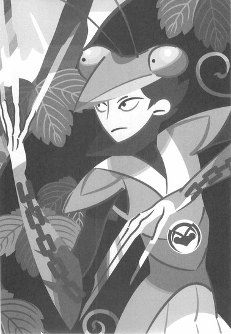
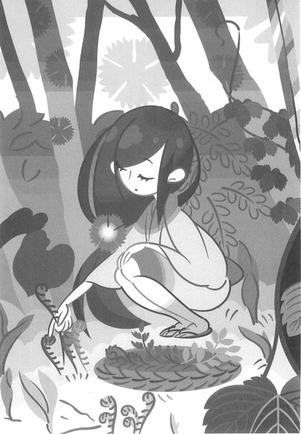
狙うのは──足か腕だ。
あれほど美しい女の身体をあえて傷つけたいとは思わないが──そういう気持ちが、既に毒なのだ。ここで、死なない程度に彼女を殺しておかなければ──のちのち不要な禍根を残しかねない。
「ふっ──」
即決即断、迷いなし。
考えるとは、迷うことだ。
これ以上よしなしごとを考えるのは──これ以上、彼女の姿を見続けるのは、自分でもまずい。真庭蟷螂は消していた気配を一気に解放し──鑢七実の小さな後ろ姿に、躊躇なく躍り掛った。
■ ■
唐突に回想に入る。
それは、今から二十年前の不承島。
波打ち際の砂浜に──みっつの影があった。
そのうちふたつは、子供の影だった。
男の子と女の子である。
男の子は四歳くらいか──女の子はそれよりも少し上といった感じだ。見るからに腕白そうな男の子に対して、女の子のほうは肌が白く大人しそう──と言うより、弱っていそうな感じだった。
鑢七花と鑢七実。
二十年前の、姉弟ふたりの姿だった。
この時点ではさすがに七実のほうが背が高い──
ともあれ。
となると、そのふたりに向かい合うように立っている、屈強な体つきをした壮健そうな男の正体も、おおよそ想像がつこうというものだ。
そう──ふたりの父親、鑢六枝である。
初登場、大乱の英雄。
しかも、この場面は二十年前──即ち大乱直後なのだ、その立ち姿は鑢六枝の全盛期のものであると言っていい。
あくまでも場面回想なので、あちらこちらが都合よく影になって、その全貌はいまいち明らかではないが、しかし、現在の七花に似ていないこともない──まあ現実は逆で、この六枝の姿に、今の七花が似ているということなのだが。
となると、七実は母親似なのだろうか。
そういえばその母親はどこに？
とにかく、そんな図体の大きな男が──自分の行為の巻き添えで、同じく島流しの目に遭ってしまったふたりの子供たちに対して──ゆっくりと口を開く。
「虚刀流の七代目は──七花に決めた」
苦虫を噛み潰したような、それは、声だった。
「こうなってしまえば、おれはもう現役を引退せざるをえまい──心中、思うところはないでもないが──しかしおれも誇り高き一本の刀として、これもさだめと諦めよう。おれはいまこのときより、剣士ではなく剣師として、虚刀流をのちの世に伝える役目をまっとうしようと思う。これから七花には──おれの命が尽きるまで、おれの身体が朽ちるまで、おれの刃が錆びるまで、過酷な訓練に身を窶してもらうことになる。虚刀流の全てを、おれはお前の身体に叩き込む──こんな何もない島では限度もあろうが、しかし考えようによっては、この島は虚刀流を教え込む場としてもっとも相応しいとも言える──世間の雑音を一切耳に入れることなく、虚刀流のみを純粋培養できるだろう」
言われている側の反応は、まちまちだった。
七花は目の前の父親が何を言っているのかわからないという風だった──無理もない、このときの七花は、子供と言うにも幼過ぎるくらいの年齢である。自分達が島流しにあったことさえ、わかっていないに違いない。この先、自分がどんな人生を歩むことになるのかすらも──わかっていないのだ。
そして七実は──無表情だった。
何も感じさせない表情。
しかし──そんな七実から、さすがは父親と言うべきなのだろう、六枝は何かを感じ取ったようだった。
優しく──否。
申し訳なさそうに、彼女の小さな肩に、自分のごつい手を載せる。
「許せ、七実」
このときの七実の年齢を考えれば──まだ六枝の言うことを理解できなくても不思議ではない。しかし彼女は弟の七花とは違い、今父親が言ったことを、父親から言われたことを、全て理解しているようだった。
七花が選ばれたこと。
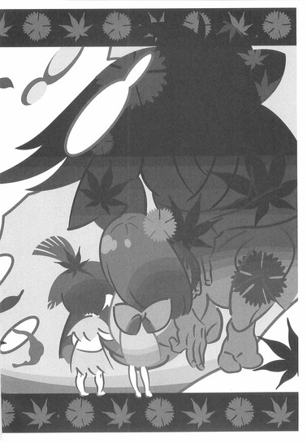
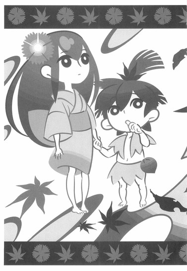
つまり──自分が選ばれなかったこと。
自分が外されたことを──きちんと理解していた。
そんな七実に──六枝は諭す風に言う。
「本音を言えば、おれはお前に虚刀流を継いで欲しいと思う──しかし、それは不可能なのだ」
「..................」
七実はあくまで無表情だ。
だが、それは表情を殺しているだけのようにも思える。
自分を殺しているだけのようにも──思える。
「わかってくれ」
六枝は言った。
「無理なものは──無理なのだ。虚刀流を継ぐ資格があるのは、今となってはもう、七花ひとりだけなのだ」
その言葉に──七実はちらりと、自分の横に立つ七花を見遣った。何もわかっていない風の、ただぼんやりと、文字通り指をくわえて、六枝と七実のやりとりを見つめている七花を。
七実のその視線に気付き、
「ゆめゆめ思い違いをするのではないぞ、七実──」
と、六枝は言った。
「お前は七花のことを妬むべきではない──厳しいことを言うようだが、お前は、このことを僻んだり嘆いたりするべきではないのだ。おれがこうしてお前に謝ることさえ──本当は間違っている」
「..................」
「くれぐれも、思い違いをするな」
六枝はそっと、七実の肩から手を外す。七実はその手ではなく──触れられていた肩のほうを見た。さっきまであった父親のぬくもりが失われた、その箇所を──見た。
「お前は女だから跡取りを外されたわけでも──病弱だから跡取りを外されたわけでもない。そんなことは、理由にならない。だが、おれは──いや、おれに限らないだろう、この世に存在するありとあらゆる武術家がそうだろうが──七実、おれはお前のような──」
虚刀流六代目当主......大乱の英雄、鑢六枝は──酷く苦々しげに言った。
「お前のような、例外的に強い人間を育てることはできない──」
■ ■
「げはあぁあっ!?」
何が起こったのか、把握できた者はいない。
その瞬間を目撃した者はいなかったし、された側の真庭蟷螂も、いったい自分の身に何が起きたのか、まるで把握できなかった。
気がつけば──吹っ飛ばされていた。
十の爪が、一本残らず全て圧し折れていた。
そして折れた全ての爪が──逆を向いて、自分の胴体に容赦なく突き刺さっている。
そのまま背後の大木に頭を強く打って──何が起きたのかまったく理解できないままに、彼はその意識を失った。
「......あら？」
そして──した側の鑢七実も、いまいち状況を把握していなかった。振り向いて、きょとんとした顔つきで、摘んだばかりの山菜を右手に、不思議そうに首を傾げている。
真庭忍軍十二頭領、真庭虫組の指揮官、『首狩りの蟷螂』と呼ばれる恐るべきしのび、真庭蟷螂が、その忍法をもって背後から飛び掛ってきた──
それは彼女にとっては、ただの単なる反射神経で対応できるくらいの出来事だった。
「..................？」
現在の日本最強が錆白兵ならば──二十年前、錆が生まれたか生まれないかの頃、そして鑢六枝が島流しに遭う以前の日本で最も強かった人間は──間違いなく彼女だった。
大乱の英雄のお墨付きだ。
当時七歳。
前日本最強──鑢七実である。
二章 拷問時間
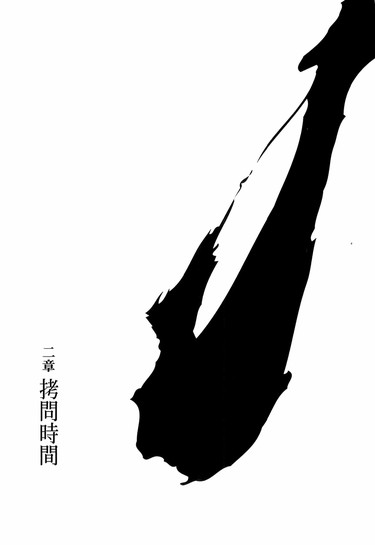
■ ■
........................。
........................。
........................、と。
真庭蟷螂は、覚醒した。
そこはさすがに百戦錬磨のしのびである、真庭忍軍十二頭領のひとり、真庭虫組の指揮者である彼は目を覚ましてすぐに自分の置かれている状況を理解した──蟷螂は、直立の姿勢で、木に縛り付けられていた。
束縛に使われている道具は、蟷螂自身が全身に巻きつけていた、あの鎖である──気絶している間に解かれて、それをそのまま利用されたらしい。上半身を腕ごとまとめて、ぐるぐるにされている。
身体に突き刺さっていた十本の爪は全て引き抜かれていた──その上、生じた十の傷には、全て止血の処理がほどこされているようだった。どうやら運よく致命傷ではなかったようだ──いや違う、そうではない、今は蟷螂を束縛する縄代わりにされている鎖は元々、身体中の急所を守るように巻かれていた──だからそもそも、どうやったところで折られた爪は急所には刺さらない。深手でなければ、死に至るような傷ではなかったのだ──しかし、そうなると......、あの娘は、急所──つまり鎖を避けるように、十爪を返したということになるのか？深手にはならなくとも、十本全てが、外れなく蟷螂の身体に命中するように？あの一瞬の間に、それだけの判断を？この状況においてはそう考えざるを得ないが、しかし、だとすれば、それは判断などというものではない──
周囲を見渡す。
誰もいない──この島に来たばかりの蟷螂には、山林の細かい区別などつくはずもなく、彼は最初、ここは自分が気絶させられたのと同じ地点かと思ったが──どうやら、違う場所のようだった。
太陽の位置から推測するに、あれから更に半刻──
「......自決されようとしても無駄ですよ」
ふと、そんな風に、声をかけられた。
正面の方向からゆっくりと近付いてきたのは、鑢七実だった。
死体のような──物体のような女。
「奥歯に仕込んであった毒は、あなたが気絶している間に没収させてもらいましたから」
「..................」
身体検査は済んでいるというわけか。
となると、しのび装束のうちに隠していた暗器のたぐいも、もれなく没収されていることだろう──もっとも、そんなことでは、蟷螂は少しも困らないが。
言われるまでもなく、自決する気など更々無い。
自決しなければならないような状況ではないからだ。
生きている──こうして、生きている。
思わぬ逆襲に遭ってしまったようだが、しかしそれでもこうして生きている以上──まだ負けではない。むしろ、こういう状況になってからが──しのびの本領発揮と言ってもよかった。
「取った山菜を、いったん家に置きに戻っていたんです──できる限り急いだのですが、こんな早く目を覚まされるとは思っていなかったので、少しお待たせしてしまったようですね。申し訳ありません」
「..................」
侵入者──襲撃者に対して取るような態度とはとても思えない丁寧な口調で、七実は挨拶をしてきた──その言葉に、蟷螂は沈黙をもって応える。とりあえず、ここは抵抗するすべのない、神妙な捕虜を演じるのが最良だ。
「重ねて申し訳ありませんが──これからあなたを拷問しようと思っています」
七実はさらりと続けた。
その表情は、ただの無表情である。
蟷螂はそこから何を感じ取ることもできない。
「あなたが気絶している間に、むろん傷の治療を終えてからですが、この場所まで連れて来させてもらいました──なぜかと言いますと、それは、そこにあなたのお仲間が埋まっているからです」
無表情のままで、淡々と七実は続ける。
彼女が指さしたその方向には、注意してみれば不自然に思えるくらいの大きさの石が置かれていた。
「..................」
「弟が埋めたのです。確か、真庭蝙蝠さんと仰いましたか──聞いていた特徴が、あなたの服装と一致します。......つまり、あなたが死んだら同じ場所に埋めて差し上げるという配慮を、わたしなりに示したつもりですが──」
と、七実は指を下ろし、再び、蟷螂を向く。
無表情である。
「──どうでしょう。死ぬには悪くない土地だと思いますが、折角ですから、選んでいただけませんか？」
「選ぶとは──何を」
そこで初めて、蟷螂は彼女に言う。
「わたしに何と何とを、選べと言うのだ」
「だから──喋って死ぬか、黙って死ぬか」
七実は平然と言った。
迷いの欠片も感じさせない──かと言って残虐性の欠片も感じさせない、当たり前のような口調だった。
「わたしとしては、別にどちらでも構わないのですが──」
言って彼女は、少し移動して、足下へと手を伸ばす。拾い上げたのは、先ほどの攻防（らしきもの）の際に圧し折られ、逆に蟷螂の身体に刺さった、十爪のうちの一本だった。なるほど、いい手だ──相手の武器を拷問に使おうとは......それならば肉体面もさることながら、精神的に与える屈辱も見込める。身体を縛る道具に、この鎖を使用しているのも、となると同じ理由だろう。
蟷螂は感心した。
実際的な戦闘面において彼女が秀でているらしいことは、もう十分過ぎるほどに、身に染みるほどにわかったが──知謀策略の面においても、優れているようだ。とても、無人島で育ったとは思えなかった。
だが、その優秀さは──逆手に取れなくもない。
しのびを相手にしておきながら、殺せるときに殺しておかなかった──その手落ちに、付け込んでみせよう。
知恵比べなら分は悪いが──騙し合いで負けるとは思わない。
「とは言え、拷問というのはいまいち勝手がわかりませんし、こう言っては何ですが、正直、黙って死んでいただけたほうが助かるというのはありますね──そもそも、あなたに訊くべきことなど、それほど数があるわけではありませんし、何もかも、おおまかには推測が立つところです──」
七実は手にした爪を、ためつすがめつしつつ、言う。
「──それでもまあ、まず確認してみましょうか。たまたま似たような服を着ているだけという線もなくはありませんから。あなたは真庭忍軍のかたですね？」
「そうだ」
肯定する。
すぐそこに埋まっているらしい蝙蝠のことを考えれば、否定しても沈黙しても、意味のない問いである。
たまたま──などと、そんな線がありえないことくらい、七実は確信しているだろう。
「では、その真庭忍軍......ううん、少し長いですね。略してまにわにと呼ぶことにしましょう。可愛くて素敵です」
「..................」
いくら知謀策略に優れていても、如何せん育った環境が同じだけあって、感性のほうは弟と同じ程度だった。
蟷螂はそこには無言だった。
やり過ごしたと言っていい。
「では、次にこの島にやってきた目的について──なのですが、しかし、これは訊くまでもありませんね」
虚刀流七代目当主、鑢七花に対する人質として、鑢七実を拉致する──彼らの刀集めの旅の邪魔をするために。
彼らが集めた刀を奪うために。
「──と言うより、わたしはむしろ安心しています。この事態に対し、喜んでいると言ってもよいでしょう。まにわにのかたがこの島に来たこと──それは、七花ととがめさんの刀集めの旅が順調に進んでいることのいい証拠ですから。そうでないと、まにわにのしのびが、はるばるこんな無人島までいらっしゃらないでしょう──いつかこんなときが来るのは、わかっていました」
あれから四ヵ月、果たして何本くらい集めたのでしょうね──と、独り言のように言う七実。それは質問ではなかったが、蟷螂は、
「二本だ」
と、答えてやった。
「この島で蒐集したらしい絶刀『鉋』を合わせれば、三本ということになろう」
「......それは、まあ、のんびりした旅なのですね。いえ──日本の広さを考えれば、そんなものですか。うーん......」
不満げだ。
どうやら彼女は、もう少し集めていると思っていたらしい。旧将軍が集められなかった完成形変体刀を、これだけの短期間に二本集めたというのは、驚いてもいいくらいの成果だというのに──
不思議な女だ。
やはり、蟷螂が持った第一印象は間違っていなかった。
この女は──危険だ。
技術や精神面をさておいても──それでもなお、危険な女だ。
「わたしはまだ──ぬしの弟に会ったことも、じかに見たこともないが──当主ということは、七花はぬしよりも強いのか？」
「ん？ ああ、いえ──どうでしょうね。ここ一年ほど、七花とはまともに手合わせしておりませんから──それに」
曖昧に口を濁す七実。
「そもそもわたしは、あなたの思っている通り、虚刀流の人間ではありますが、それはあくまでも鑢家の人間というだけであって、厳密に剣士かどうかと問われれば、なんと言うか微妙なところですし──」
「......先ほどわたしに使ったあの技は──虚刀流の剣技ではないのか？」
「それは、まあ、そうなのですが──ちなみにあれは虚刀流の返し技のひとつで『女郎花』と言います。奪刀術の一種で、ひとことで簡単に説明すれば折った刀を相手に返す技です。それをつい反射的に、十連続で繰り出してしまいました──って、どうしてわたしのほうが質問されているのですか」
乗り突っ込みのごとき台詞だが、別にそういうわけではなさそうだ。
「では──そうですね」
七実は切り替えたようで、次の質問に移った。
「このたびは何人でいらしたのですか？」
「......何人で、とは」
こちらが複数であることを──見抜いている。
蝶々や蜜蜂と一緒に来たことを──
「妙な問いだ。むろん、わたしひとりで来た──女ひとりを拉致するのに人数を使うほど、真庭の里に人間は余っておらん。ぬしがこれほどの使い手であるとわかっておれば、それは、十人二十人、用意してきただろうがな」
「わたしを拉致してそれでおしまいというわけではないのですから──そこはあくまでも計画の始まりに過ぎないのですから、複数人で来ていても変だとは思いませんよ。そうですね──七花が現時点で所有している刀が三本なのですから──綺麗に刀を分け合おうと思えば、三人──とか──」
「..................」
反応してはならない。
これは罠だ。
この女は当てずっぽうを言って、こちらの反応を窺っているだけに過ぎない──まさに正鵠を射ているが、しかし、そんな言葉に、そんな推測に、何の根拠もない。それは七実自身が一番よくわかっているはずだ。
「人数と、それぞれが使う忍法を──教えてくれたら、助かるのですけれど」
「..................」
「ああ、今のはわたしが助かるということで、あなたの命が助かるという意味合いではありませんので、くれぐれも誤解なきように」
「..................」
「実は先ほど、山菜を家に置いてくる際に、お恥ずかしい話ですけれど道に迷いましてね──高台のほうに出てしまったのです。しかし──そこから見る限り、着岸している船らしきものはありませんでした。まあ、そこから海全体が見えるというわけでもありませんから──断定はできませんが、ひょっとして──船を使わず忍法を使ってこの島に来たのではないかとも──思えますよね──」
言葉を短く区切りながら──七実は言う。
ただの当てずっぽうで、ずばずばと、容赦なく正解を言い当ててくるが──蟷螂はそれでも、無反応を装う。
七実もそれ以上言葉を重ねなかった。
山林の中、静寂が生じる──が、それもすぐに終わった。蟷螂の爪を片手に、七実が一歩、こちらに近付いてきたのだ。
「弟の話ですけれど」
「..................」
「昔、あのこは爪を噛む癖がありましてね──上品ではないからやめなさいと言ってもなかなかきかず、とにかく爪を噛み続けるのです。親指なんて、ぼろぼろになってしまって──だからわたしは、あるとき、あのこの爪を全部剥いであげたのですよ」
一歩一歩近付いて来ながら──彼女は言う。
「そうしたら、あのこはそれ以後、爪を噛むのをやめました。まあ、幼少時代のしつけの話ですから、一概に拷問と一緒くたにするのはどうかと思いますが──あなたの場合は、順序を逆にしてみましょうか」
その自然な、逆に言えば隙のない動きに、七実が何をするつもりなのかわかったところで、蟷螂は口を閉じる暇も与えられなかった。縛られた蟷螂の手前、ぎりぎりのところで足を止めた七実は、蟷螂自身の爪を......硬度と鋭度は刃物となんら変わらないそれを、彼の口の中に──差し込んだのだ。
「噛んでみなさいな」
「..................」
蟷螂はしのびとして──拷問に耐える訓練も受けている。だから、鋭い刃物を柔らかな口腔内に突っ込むという拷問法を、さほど目新しいとは思わない──それほど残酷であるとさえ、思わない。この場でできるもっと酷い拷問を、即座に五つは提案できるくらいだ。が、しかし──これを行なう七実の、平然とした表情を見れば──むしろそちらのほうが怖いと思う。拷問というのは──通常、する側も精神に重圧と負担を感じ、普通ではいられないものなのだが──
この女──いったいどんな神経をしているのだ。
元々──普通ではないのか。
「どうしました？ 子供に戻った気分で──自分の爪を噛めばいいと言っているのです。少し舌を傷めるかもしれませんが、何も喋らない舌なんて不要でしょう？」
「あ──待て、わかった──」
口ではそんなことを言いながら──
蟷螂は、しかし、内心でほくそ笑んでいた。
勝った。
七実の精神が異常の域にあることは、それは恐るべきことかもしれないが──しかし、状況がここに至ってしまえば、最早そんなことは蟷螂にとっては関係なかった。七実がここまで近付いてきた、この状況──
蟷螂は手首を返し──十本の指を構えた。
爪の剥がれた、十本の指を。
鎖で上半身を腕ごと縛られている──だがこの縛り方では、蟷螂を封じたとはとても言えない。腕を自由に動かすことはできなくとも──かろうじて鎖から外に出ている、手首を動かすことはできるのだから。
縛るのなら、両の手は後ろに縛るべきだった。
おおかた、凶器となる爪を全て圧し折り、手持ちの武器も没収したから、抵抗のしようもないと安心しているのだろうが──甘い。
忍法爪合わせを舐めている。
蟷螂の爪は──繰り返し、伸ばすことができるのだ。むろん、さすがに回数に限度はあるにせよ──一度折られ、一度剥がされた程度、そんなことでは蟷螂から武器を奪ったことにはならない──！
「わかった、とは？」
「ああ、だから、喋る──おれたちの、忍法は──忍法──忍法──」
真庭蟷螂は、そう言って──
「忍法爪合わせ！」
と──一息に、その爪を伸ばした。
今回はじっくりと時間をかけて形成したりしない、その分だけ厚さは失われることになるが、しかしそれでも先端の鋭さには気を配り──正面の七実の身体を目掛けて、十本の爪をそれぞれ、最速で伸ばしたのだった。
さながらそれは十本の槍だった。
が──
「........................」
七実は──腰を軽くひねるだけで、その十本、全ての爪をかわしていた。否、ただかわしているのではない、蟷螂のそれぞれの爪は七実の着物に、彼女の肌をかすめるようにして突き刺さり、貫いている。一見、七実が避け遅れたようにも見えるが──しかしそうではなかった。七実はわざと、着物のみを貫かせるような避け方をしたのだ。そうすることで──そのように故意にぎりぎりでかわすことで、七実は十爪の、その後の動きを封じているのである。着物を利用して、見事に十爪を搦め捕ったのだ。
もっとも、それは彼女にとって、念のため以上の意味を持つ行動ではなかっただろう。逆に言えば、真庭蟷螂の十爪を避けるにあたって、七実にはそれほどの余裕があったということだが──
そんな風に蟷螂の攻撃をかわしながら、七実は手にしていた爪を、蟷螂の口の中に力を込めて押し入れていた。その先端は蟷螂の口腔内を容赦なく貫き通し──背後の木の幹にまで、貫通していた。
結論から言って──真庭蟷螂。
真庭忍軍十二頭領がひとり、真庭蟷螂は──黙って死んだ。
「............ふう」
疲れた、と。
爪先立ちで、腰を捻った形のまま、七実はずるずると後退し──着物に刺さった爪を全て抜いたところで、ため息をつく。
ため息が誰よりも似合う女である。
「......もとより、忍者が拷問ごときで情報を売るとは思ってなかったけれど──けれど、それでもさすがというべきなのかしら。鎌をかけても、全然引っかかってくれなかったし──ふむ。しかし、あと何人かは来ていると、決めてかかったほうがいいようね──けれど、七花ったら」
蟷螂の爪によって穴だらけになってしまった自分の着物をやれやれと見遣るようにしながら、鑢七実は笑う。
心底邪悪そうな笑みだった。
「あれからまだたった二本しか集めていないだなんて──相変わらず、暢気なんだから。帰ってきたら、お仕置きね」
■ ■
ばりん、と。
小岩の上に置いてあった臙脂水晶が──前触れもなく、不意にふたつに割れた。
「..................」
「..................」
それを真庭蝶々と真庭蜜蜂は、冷めた目で見る。
その水晶は、真庭蟷螂が鑢七実を攫いに行くにあたって、ふたりに託したもので──真庭の里の特産物のようなものだ。原則的に、頭領しか持つことを許されない貴重品であり希少品である。普段から肌身離さず所有し、その水晶の中に独自の念を込めることで、その水晶は所有者の状況を他に知らせるための道具となるのだ。
水晶が割れたことは──通常、所有者の死を意味する。
「蟷螂さんが──落命したようですね」
「......だな」
不承島の端の辺り、岩場に身を隠し、蟷螂の帰りを待っていたふたりの反応は──きわめて冷静だった。しのびとして、己の感情を操作するすべは心得ている──仲間が死んだところで、みっともなく取り乱すようなことはない。
ただ、それはあくまでも感情を操作できるというだけのことであり──感情がないということではない。
仲間が死んだという事実に──それも組単位の指揮官だった、否、そうでなくとも、親しきともがらだった真庭蟷螂が死んだという事実に、何も感じないような真庭蝶々と真庭蜜蜂ではなかった。
表情こそ変わらないが──ふたりの間の空気は、明らかに変わった。
「だが──それこそ蟷螂どのの言い草じゃねえが、解せねえな──あの蟷螂どのが、当主でもねえただの女に負けたってのか？あの人の忍法爪合わせが通じない相手なんて──想像もつかねえぞ。あの傍若無人がしのび装束着て歩いてるみたいな喰鮫どのだって、蟷螂どのには一目置いてたんだ。忍法以前に、あのひとの経験はちっとばかり半端じゃないんだぜ。どう考えても──蟷螂どのが、負けるはずがねえ」
「......臙脂水晶は絶対ではありません。所有者が死んでも割れない場合もあれば、粉々に割れたところで所有者が生還した例もあります──」
しかし、と蜜蜂は言う。
「──この場合、僕らは蟷螂さんの敗北を前提に動いたほうがいいんじゃないでしょうか。今、蝶々さんが言ったそういう気持ち──負けるはずがないという気持ちが、蟷螂さんの油断に繋がった可能性はあります」
「油断......蟷螂どのが油断なんてするか？」
「しないでしょうね──誰を敵に回したところで、過大評価も過小評価もしない人です。油断なんて、ありえない。ええ、ですから、こう考えるしかないでしょう──その女は、それ相当の使い手である──と」
「............」
「少なくとも、そう思ってかからねばならないでしょう──僕や蝶々さんは、戦闘においては蟷螂さんには劣るのですから」
「人質を取りにきて、その人質にやられてちゃあ世話ねえよな──確かに。このままじゃおれたちは、とんでもねえ間抜けってことになるぜ。愚かしいにも程がある。しかし虚刀流ってのは、そんなべらぼうに強いのか──この短期間であっという間に変体刀を二本集めちまうのも、頷けるな」
「ひょっとして、その姉のほうが弟よりも強かったりして──ね」
「いくらなんでも、そりゃねえだろ。もしもそうだってんなら、姉のほうが刀集めの旅に同行するはずだ」
「事情があったのかもしれませんよ。あの奇策士さんはどうも同性に嫌われる傾向がありましたからね、案外、それが理由かも」
「ばか言ってんじゃねえよ」
軽く笑って──蝶々は立ち上がった。その動きに蜜蜂は面食らったように、「ど、どうするつもりですか？」と、慌てて訊いた。
「順番的に、次に行くのは──僕でしょう」
「いや、おれが行く──じっくり休ませてもらったからな、もう疲れも取れた──」
「けれど、こういう場合は僕の忍法のほうが──まだしも有効に作用すると思います。蝶々さんの忍法は、なんというか......直接的過ぎます」
「わかってくれや、蜜蜂。おれは蟷螂どのが好きだったんだよ」
「そんなの、僕だって同じです」
「おれはお前も好きなんだよ。死んで欲しくねえとは思わないが、虫組の中で誰かひとりが生き残るんだとしたら、それは一番若いお前であるべきだと思う」
「そんな──」
普段、そんなことを言いそうもない蝶々の口から感傷的なことを言われ、蜜蜂は言葉を失ったようだった。そんな蜜蜂に、蝶々は「かっかっか」と、豪快に笑い掛ける。
「お前は年上に見せ場を譲ってやったくらいに思っておけよ──虚刀流の姉がそこまでの使い手だと想定するなら、勝つ確率は少しでもあげておくべきだろう。お前は、おれと虚刀流の姉との戦いを、離れた場所から観察していろ。そしてもしもおれが負けるようなことがあれば──その観察を踏まえて、お前が虚刀流の姉を拉致するんだ」
「..................」
確かに、虫組で一番の戦闘力を誇っていた真庭蟷螂が負けた今、それが一番合理的な作戦と言えた。相手を十分に知ってから戦うのであれば──真庭蜜蜂の忍法は、より有効に作用するだろう。
「しかし──それでは蝶々さんが」
「ばーか。おれは別に、犠牲になって死ぬつもりなんかねえよ。そんな普通の忍者みてえなこと、このおれがするか。案外、うまいこと言って、年下のお前から手柄を横取りしようとしてるだけかもしんねーぜ」
かっかっか、と、笑い続ける蝶々。
そして、ふっと真剣な顔つきになって、言う。
「あのさあ、蜜蜂」
「......なんですか」
「この任務が終わったら、おれ、結婚するんだ」
「..................」
死ぬ伏線を張り始めた。
誰に頼まれもしないのに、自ら。
「いつどこで命を落とすかわからん稼業だから、これまで踏み切れなかったが──成功するにしろ失敗するにしろ、これが最後の任務になるからな。決めたんだ」
「そ、そうだったんですか──お相手は？」
「お前も知ってる奴だよ。勘のいいお前のことだ、薄々感づいてたんじゃないのか？同じ十二頭領のひとりで、鳥組の真庭鴛鴦だ──」
「鴛鳶さんですか......はは、尻に敷かれそうですね」
「だろうな」
「蝶々さんも、いよいよ年貢の納め時というわけですね」
「かもしんねえ。けど、あいつもふたりきりのときは、可愛いところもあるんだぜ？......お前に言ったことはなかったが、おれはそもそも南方の生まれでよ。元々、里の出身じゃなかったんだが──あいつはそんなおれに優しくしてくれたもんだ。今のおれがあるのは、あいつのお陰と言ってもいい──はは、鳥組と虫組って、まるで捕食関係みてーだけどよ。思えばあのとき、おれの心はあいつに食われちまってたのかもしれねえな──」
ついに真庭蝶々は過去を語り始めた。
一体なにが彼をそこまでさせるのだろう。
「ふん──って、おっと」
それでも彼は止まることなく、今度はしのび装束のうちから、南蛮渡来の紙巻煙草を取り出しかけ、そこではっと気づいたように──
「危ねえ危ねえ。ちょっと前から、おれ、禁煙してるんだった」
と、その紙巻煙草を真ん中でへし折るのだった。
彼の死亡は確定したと言ってもよかった。
「それが、鴛鴦がおれと結婚してくれるにあたっての条件だったからな──」
「は、はあ......あ、あの、しかし」
果たして、それを察してなのかどうなのか、
「蝶々さん、いい話ですけれど、でもどうでしょう、そのあたりでやめておいたほうが──」
と、蜜蜂は手遅れ気味の助け舟を出した。
「ん？ そうか？」
「ええ──とにかく、わかりました。順番は蝶々さんにお譲りします──しかし、僕だってしのびです、やるからには徹底しますよ。僕は何があろうと──助太刀に入ることはありません。僕の援護はいっさい期待しないでください。たとえ、蝶々さんが嬲られるような目に遭おうと──」
「ああ、そうしてくれ。そういう場合はせいぜい悪足掻きして、お前が得られる情報を増やすことにするよ」
言って──蝶々は、割れた臙脂水晶の片割れを拾い上げ、自嘲気味な表情を浮かべてから、それを蜜蜂に投げ渡した。
「......？ なんですか？」
「虫組はいつも一緒ってことだよ。死んだ程度で、おれたちの絆はほつれたりしねえ」
「......なんだ。蝶々さんって、意外といい人だったんですね」
それまでそんな素振りを見せなかった奴がいきなりいい人になるというのも、また死の兆候ではないかと不安を覚えているかのごとき蜜蜂の台詞だったが、蝶々は「よせや」と照れくさそうに言ってから、蟷螂が残した臙脂水晶の残り半分を、自分のしのび装束の中に乱暴に押し込んだ。
それは彼にとって、左胸の、心臓の位置だった。
......今更のようにではあるが、しかしかろうじて生き残る伏線を張ってから──真庭蝶々は、出陣した。
■ ■
回想、その二。
今度は二十年も遡らない──ほんの一年前の話。
虚刀流六代目当主、大乱の英雄、鑢六枝──七花と七実の父親が亡くなった直後のことである。六枝の埋葬を終えてから一週間が過ぎた頃、七花のほうから、七実に対して、手合わせの申し入れがあった。
真庭蟷螂に対し、弟とはここ一年ほど手合わせをしていないと言った七実であり、だからそれが今のところ最後の手合わせということだが──実を言うと、これはふたりにとって最初の手合わせでもあった。父・六枝は七花に対し、七実と手合わせをすることを厳格に禁じていたのである。
つまり、鑢七花と鑢七実が試合ったのは、現時点ではそれが最初で最後ということだ──さて、その結果の如何は？
ひとことで言うと勝負はつかなかった。
病弱な七実の体力を考え、最初から時間を限った試し合いだったのだ──そして制限時間内に決着はつかなかった。
だから、一応、引き分けということになる。
ただ、誰一人目撃者のいなかったその試合、もしも見る者があったとすれば──判定試合だったとすれば、例外なく、誰もが姉のほうに軍配をあげただろう。
七花と七実の間に実力差があり過ぎて、そもそも勝負が成立しなかったのである。
決着はつかなかったのではない──つくところまで達さなかったのだ。
大人が子供をあやしているようなものだった。
否──子犬が飼い主にじゃれついているようなものだったかもしれない。
七実は七花の攻撃を全て捌き──とうとう、自分からは一度も攻撃を繰り出さなかった。
姉が自分との立ち合いで、そういう振る舞いを見せるだろうことは、実は七花にもわかっていた──が、それでも、それなりに追い詰められれば、七実だっていつかは反撃せざるを得ないはずだと、そう思っていた。
見込みが甘かった。
そのときの七花では七実に、反撃させることさえもできなかったのだ。十九年間、雨の日も風の日も雪の日も、休むことなく積んできた七花の修練の成果は、姉の七実が反撃する必要さえ感じない程度のものだった。積極的な攻撃はおろか、『女郎花』のような返し技さえ、七実は使わなかったのだ。
単純な体力においては圧倒的に勝るはずの七花のほうが、最後には地面に倒れてしまうような、そんな曖昧な決着で──ふたりの生涯初めての手合わせは、終わった。
「なかなか、よかったわよ」
立ち合い後、七実は弟にそう声をかけた。
「父さんの全盛期ほどではなかったけれど──そこに追いつくのも、そう遠い日ではないでしょう。その調子で精進しなさい──決して努力を怠っては駄目よ」
さすがの七花も、この勝負の結果にはひどく落ち込んだようで──一週間ほど元気がなかったという。
当たり前だ。
十九年、それまでの人生のほとんど全てを修行に費やしてきた自分が──修行らしきおこないをしているところを一度も見たことのない姉に、一太刀も浴びせることができなかったのだから。
回想終了──
三章 見稽古
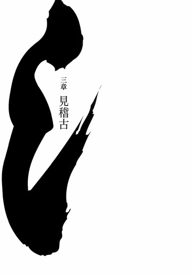
■ ■
もちろん、奇策士とがめは刀集めの旅の相棒として鑢七花を連れて不承島を去る際に、間違いなく七花にとって弱点となるであろう鑢七実のことをおもんばからなかったわけではない。それが真庭忍軍の手によってなのかあるいは他の誰かの手によってなのかはともかくとして、いずれ、今回のようなことが起きるだろうと予想はしていた──だから七実に対し、一緒に船に乗って本土に渡り、とがめと七花の刀集めの旅が無事に終わるまで、彼女を尾張城にかくまうという案を出した。
七実は頑なに拒絶した。
自分は何があろうとこの島に残る──と、強く拒絶した。
自分の身くらいは自分で守れます──
わたしは生涯この島を出ないと決めています──
どうぞわたしのことはお気になさらず──
そんな感じで、にべもなかった。
はっきり言ってとがめと七実はそこそこの似たもの同士なので、このように意見が対立したときの泥沼さ加減といえば筆舌に尽くしがたい。はたで見ていた七花は口を挟むわけにもいかず、がくがくだったと言う。
ただ、その七花は姉の強さをその身をもってよく知っていたので、この議論においては姉の味方だった──まあ、そうでなくとも、七花が姉の味方をしない議論というのも、そうそうないのだ。
最終的にはとがめが折れた。
否、折れたというより、曲がった、くらいかもしれない。
他人の世話になりたくないという七実の気持ちはとがめにとってはわからなくはないものだし（その点においても、七実ととがめは似たもの同士と言えた）、また、そういえば真庭蝙蝠の不意打ちに、一番速く対応できたのがとがめでも七花でもなく七実であったことも、そう判断する材料のひとつになった。
七花も七実も、まるでそれが暗黙の了解でもあるかのように言わなかったので、当主の七花よりも家長の七実のほうがずっと──はるかに強いという事実をとがめは今に至るまで知らないのだが──それでも一応、とがめは七実の実力を、自分の身くらいは守れる程度ではあると信じたのだった。
七実は七花にとって泣きどころにはならない。
少なくとも、短期間ならば。
議論はそういう風に落ち着いて──かくして七実を残し、七花ととがめが不承島を出立したのが、今から三ヵ月前のことである。
といったところで。
「......どうやら、道に迷ってしまったようね」
ぽつりと、七実は呟く。
場所は──彼女自身にはわからない。
まったくわからない。
先ほど真庭蟷螂に止めをさしてから、それほど時間は経っていない──しかし、とりあえず小屋に帰ろうとしたはずなのに、どうしてなのか、まだ山林から出られない。二十年間住んでいる島の中なのにもかかわらず──だ。
方向音痴。
それは彼女の有する弱点のひとつだった。
また、生来の病弱さゆえに、異様に遅い彼女の移動速度も、それに拍車をかけていた。奇策士とがめは自分の強さを障子紙に例えるのがお好きなようだが、それにならって言うなら、鑢家の家長、前日本最強の鑢七実の歩みは蝸牛なみに遅い。
七花が七実を働かせたがらなかった理由も、むべなるかなといった感じである。
「家に戻って、ごはんを食べてからゆっくりと忍者さんを探そうと思ってたけど......この分じゃ先に忍者さんを探したほうが効率よさそうね」
とうとう小屋に戻ることを諦め、七実はそんなことを言い出した。一食抜くことになるが、もともと食の細い彼女のこと、一日や二日の絶食はたわいもないことだった。
今や、無理矢理にでも、押し込んででも七実に食事を摂らせようとする弟も、この島にはいないことだし。
「とは言え、どうしたものかしら......忍者さんに隠れられていると一筋縄ではいかないわよね......となるとわざと目立つところに姿を晒して向こうから見つけてもらったほうが──」
ぶつぶつと作戦を練る七実。
むろん──彼女とて無人島育ちであり、戦場経験があるわけでも実戦経験があるわけでもない。同じ真庭忍軍の真庭蝙蝠を、この島において相手にしたときの弟と同じく、これが初めての、命がけの勝負ということになるのだが──しかし、それにしては彼女の立ち振る舞いは至極冷静なものだった。
ひとりで山菜を摘んでいるときと表情が何も変わらない。
戦闘の興奮に酔いしれることも──戦闘の恐怖に怯えることもない。
ただ、淡々と──戦略を練っている。
「......と。その必要もなくなったみたい──」
不意に──そう言って彼女は歩みを停める。
そしてじっと正面を見据え、「隠れてないで、出てきてくださいな」と、呼びかけた。それでもしばらくの間、反応はなかったが──やがて、一本の木の向こう側から、ひとりの男が現れた。
散切頭の、小柄な男だった。
「どうしてわかった？」
その男は七実に問いかける。
「気配は完璧に消していたはず──だがな」
「久し振りに聞きますよ──そういう台詞」
散々──言われた。
子供の頃──島流しに遭う前、七歳以前の頃に。
気配は完璧に消していたはず──とか、なんとか。
そんな気取った戯言を散々言われた。
「むしろ、わたしのほうが訊きたいくらいなのですけれど──どうして生きている癖に、気配を消せるなどと、そんな大それたことを思えるのですか？そこにいる人は──そこにいる人でしかないでしょう」
「............ふん。教える気はねえってか」
どうやら七実がして欲しいのとはぜんぜん違う理解をしたようだが、しかしその点をそれ以上追及してくることなく（説明のしようがない七実にしてみれば、たとえ間違った理解をされたところで、むしろそのほうがありがたかったかもしれない）、その男は構えて、名乗りをあげる。
「おれは真庭忍軍十二頭領がひとり、真庭蝶々だ──あんたを攫いに来た」
「魅力的な口説き文句ですね──殿方からそんな台詞を言われる日が来るとは、ついぞ思いもしませんでした」
七実は薄く笑う。
例の邪悪そうな笑みである。
「申し遅れました──といっても攫いに来たということならどうせご存知なのでしょうが、それでも一応礼儀ということで──名乗らせていただきます。わたしは鑢家の家長、鑢七実と申します」
「ああ──知っている」
「......せっかくですから、教えておいてもらえますか？先ほど、あなたと同じ服装をなさったかたに襲われたのですが──あのかたのお名前は？」
「なんだ──名乗らなかったのか？」
「ええ──」
「ふうん──珍しいな」
事実は、真庭蟷螂は名乗る暇もなく七実に吹っ飛ばされ、その後は拷問の場面となったので、とてもではないが名乗れるような空気ではなかったということなのだが──そして七実は、うっかり彼の名を訊き忘れてしまったということなのだが──蝶々の考えは、そこまでは及ばないようだった。
彼はまだ認識していない。
目の前の女の実力を。
しかしそれは、仕方のないことだった──鑢七実の強さとは、向かい合っただけで理解できる種類のものではないのだ。そういうわかりやすい強さとはまったくの別次元に属する、例外的な強さ──
「あのひとの名前は、真庭蟷螂だよ」
「蟷螂......ああ、だから」
爪が武器だったのですね、と七実。
過去形で言った。
「蟷螂どのを──殺したか」
「ええ──襲われたものですから」
七実は答える。
「あなたがたにもわたしを攫わねばならない正当な理由があったのでしょうから、とりたてて正当防衛を主張するつもりはありませんけれど。以前、この島にやってきて、わたしの弟がお相手した真庭蝙蝠というかたと、同じ場所に埋葬させていただきました」
「......そうか」
ここで蝶々は、しんみりとした顔をした。
七実からすれば意外な反応だった。
実を言うと、七実は、穴を掘ってそこに死体を埋めるという行為に使う体力は生半可ではなさそうだという冷静な判断をし、蟷螂の身体はあのまま、鎖で木に縛り付け、口中を彼自身の爪で串刺しにしたままにして来たのだが、そんな真実を言い出せる状況ではなくなってしまったようだった。
「..................」
まあ、早いか遅いかの違いか。
約束はできる限り守りたいし。
この分だと、どうせ、目の前の忍者も含めてあと何人か──あの場所には埋めなくてはならないのだから。
ならばまとめてやったほうが合理的だ。
合理的な方がいい。
七実はそう思った。
「ああ......そうだ。訊いちゃおうかしら──蝶々さん。そちらの人数を教えていただけますか？」
「ああ？」
「人数ですよ──何人でこの島に来たのです？実は軽く拷問したのですけれど、蟷螂さんは教えてくれなかったのですよ」
「蟷螂さんが教えなかったことを、このおれが教えるわけが──ないだろう」
「そう」
蝶々の言葉に、あっさりと退く七実。
これから行なう戦闘を離れたところから蜜蜂に観察させている都合上、蝶々にしてみればあとに誰かが控えていることは、知られないほうがいいのだから、ここで彼がそう答えるのは当然だ。勝負のあとの拷問が無駄であることは蟷螂のときに学習したので、ならばとあえて先に訊いてみた七実だったのだが──
しかし、その成果はあった。
その言い方では、七実にとってはあとに誰かが控えていると教えてくれているようなものである。これは蟷螂と蝶々のしのびとしての経験の差というより、やはり先に訊いたかあとに訊いたかの差と言えよう。
ただし......、それではまだ、このあとに何人控えているのかが、わからない......。
ひとりなのか......ふたりなのか、三人なのか......あるいは、もっと多いのか......。
「蟷螂どのを倒したあんたを、おれは女とは思わん──遠慮会釈なく、最初から本気でやらせてもらう。場合によっては殺してしまうことになるかもしれんが──おれはそれでも構わないと考えている」
「構わないのですか？ それでは人質になりませんよ」
「むろん人質にするのが何よりだが、しかし次善の策がないわけでもない。姉の死体を目前に晒すだけでも、弟の戦意を削ぐには十分だろう」
「なるほど」
忍者らしいお言葉です、と七実は頷く。
「だから手加減などいっさい期待しねえことだ──おれは真庭の里の暗殺術をあますところなく使用する。とはいえ、もちろん、降参に応じるつもりはあるんだぜ。やべえと思ったら、いつでもいいから声をあげな。おれは喰鮫の野郎とは違って、無益な殺生が好きってわけじゃねえ──」
「よしなに」
「ふん──」
そう言って──蝶々は構えを取る。
それは拳法の構えだった。
帯刀しておらず、見える場所に武器を備えていない蝶々の攻撃手法を、さりげなく七実は探っていたのだが──なるほど、拳法か。それなら武具は必要ない。
空手──いや、違う......あの型は......。
「いくら探っても無駄だぜ──これは真庭拳法っつってな、世間に出回ってるような一般的な拳法とは、まったく起源を別にするものだ」
「真庭拳法......」
「もっとも、今じゃこの拳法を使うのは、おれの班のしのびくらいのもんだけどな──どうした？お前は構えないのか？」
「..................」
「虚刀流とは無刀の剣法だと聞いているぜ──つまりは拳を刀に見立てた拳法ってことだろう？蟷螂どのには言わなかったけどよ──おれは実は、試してみたいとは思ってたんだよ。誰も彼もが武装して戦うこの時代に、あえて身ひとつで戦う虚刀流──いいじゃねえか。同じ拳法家として、是非ご指南いただきたいところなんだがな」
虫組の中でただひとり、蝶々が虚刀流を最初から知っていたのには、そういう事情があったのだ。挑発するような、しかしおそらくは徒手空拳で戦うものとしての本音であろうその言葉に、しかし──七実は反応しない。
一切、反応しない。
ただ、だらんと手を下げて、足も普通に、肩幅に広げ、あくまで直立しているだけである。不用意に佇んでいるようにしか見えない。
「......どうした？ おれは構えるまで待ってやるっつってんだぞ──」
「そうは言われても──わたし、今まで構えたことなんてありませんから──」
「............？」
蝶々は七実の言葉が理解できないような、面食らった表情を浮かべる。それはそうだろう、それは正常な反応と言えた。戸惑いながら、
「虚刀流には構えがないってことなのか......？」
と、苦し紛れの質問をする。
しかし、そうではない。
これまでの刀集めの物語を軽く振り返るだけでも、虚刀流七代目当主、鑢七花が、敵に対して数々の構えを見せていることは確かである。一の構え『鈴蘭』、二の構え『水仙』、七の構え『杜若』──
構えひとつにつき奥義をひとつ。
それが虚刀流だったはずだ。
「だから──わたしは虚刀流としては異端なのですよ。でも、こうは思いませんか？蝶々さん。構えるなんて────無駄なことだと。何かあるたびにいちいち構えるだなんて──その分だけ、動作が遅れるじゃありませんか。今のあなたがそうであるよう、構えることで、次にどうするつもりなのかだいたい読めてしまいますし──」
「............！」
「せっかくの謎の拳法も、結構、底が透けちゃってますよ──そういう風に構えるだけで」
無構。
あらゆる武術における、それは最終形にして完成形の構え──自然体。
それを七実は──体現しているのだった。
まさしく、ごく自然に。
構えていないだなんてとんでもない──彼女は蝶々に気付いて足を停めたときからずっと、絶えることなく臨戦態勢だったということか──！
「それでも強いて名付けるとするなら、虚刀流零の構え『無花果』と言ったところでしょうか──」
そして──彼女は動き出す。
ゆっくりとした動作で、小さな歩幅で一歩ずつ。
拳を構えた蝶々に近づいていく──
「く......っ、う......」
その遅過ぎる動きに──蝶々は待ち切れない。
蟷螂が七実を見たときに予想した通りだった。
変に言葉を交わしたことで──呑まれている。
「おおおおおおおっ！」
ふたりの距離が半分にまで縮まったところで──たまらず蝶々は飛び出した。一気に距離を詰めて、そして後ろ足を跳ね上げるようにして、全体重を乗せた回し蹴りを彼女の顔面に向ける──
すいっ、と。
それまでの緩慢な動作が嘘のように、七実は軽やかにその攻撃をかわす──そして。
「虚刀流──『雛罌粟』」
だらりと、神経を切断しているかのようにぶら提げていた手が急に命が宿ったがごとく──動く。下方から上方へ向けて繰り出される、手首を返しての切り上げの手刀──
足を挙げて隙だらけだった、蝶々の脇腹に見事に吸い込まれていく──
「────！」
蝶々の小柄な身体が吹っ飛ぶ──しかし、ここで驚いたのは七実のほうだった。それはそうだ、『雛罌粟』は相手を切り裂くための技──蟷螂に使った『女郎花』のように、相手の身体を浮かすことのできる技ではない。『女郎花』だって相手の勢いを利用しているだけに過ぎない──いくら小柄だとは言っても、蝶々の体格は七実よりもずっと立派なものだ、病弱な七実の身体に、それを力ずくで飛ばせるだけの筋肉はない。
しかし、蝶々は自ら後方に跳んだわけでもない。
それだけの手応えさえも──なかった。
「ふっ──」
その蝶々は、空中において、更に続けて奇妙な動きを見せた。すぐそばに生えていた木のごく細い枝を踏み場に方向転換し──七実のところに戻ってきたのだ。そして空中から、七実に右から突きを返す──
たまらず七実は後ろに転がり、その場を逃れた。
蝶々は身体を反転させ、着地する。
あえて追撃しては来なかった。
後転後、即座に立ち上がった七実を流し目で見て、
「よく避けられたな」
と、賞賛の言葉を投げ掛けてきた。
上から見た、賞賛の言葉である。
「真庭拳法と真庭忍法──この合わせ技を最初の一回からかわせたって奴は、あんまりいないんだけどな──」
「忍法──」
「忍法足軽──おれの動きは重力を無視できるんだよ」
勝ち誇ったように──呑まれていた自分を取り戻すかのように、蝶々は説明した。
「どんな重いものでも持てるし──あんな細い枝でも、おれにとっちゃ十分過ぎるほど立派な足場になるんだ。あんたがおれの身体にどんな攻撃を加えようと、おれはその方向へと吹っ飛ぶだけだ──」
軽過ぎるがゆえに──攻撃が通用しない。
そういうことか。
人間ふたりを肩に乗せて海を渡ってくることも、重さを無効化できるというその忍法があれば、なるほど、たやすいことだろう。
「......わたしの手刀は実際には当たっておらず──その前に、手刀によって生じた風圧で、もうあなたの身体は浮いていたということですか......」
「おうよ。単純な打撃に対してはまず無敵と言っていいぜ──なにせ物理的に、相手の攻撃を食らわないんだからな」
「そんな異形の技を使いながら飄々と拳法家を名乗るとは──なかなかどうして、図太くていらっしゃる」
「図太いとか言われてもよ、それがおれの忍法なんだから仕方ねえじゃねえか──どうだい？降参するなら今が好機だぜ──次は本気で行く」
「最初から本気だったはずなのでは？」
蝶々の申し入れに、揚げ足を取るような言葉で応じる七実──真庭の忍法を見せられても、まるで怖気づいた風はない。
その態度が蝶々を苛立たせる。
「あんた──おれの忍法のすごさがわからねえのか？」
「わかりますよ──そんな風に自ら主張なさらずとも、十分にすごいと思っていますよ。おそらく、重さを消失させるというその技──歩法なのでしょうか──その技を使って、お仲間と一緒にこの島にやってきたのでしょう？それならば隠密性は増しますからね──幕府にも、島側にいるわたしにも、露見しにくい」
「............」
「しかし、わたしがそれよりもすごいと思っているのは──あなたがその技を習得するまでにかけただろう時間のことですよ。生半可な努力ではなかったのでしょうね──これまでの人生の、ほとんど全てを費やしたのでしょうね──」
七実はゆっくりと──ため息交じりに言う。
「──あの蟷螂さんにしたってそうです。忍法爪合わせと仰っていましたが──自分の肉体をあそこまで改造するのに、どれだけの時間を要したか──あなたがた個人の修行の成果でもないのでしょうね。真庭の里に、はるか昔から延々と受け継がれて、ようやく完成した英知なのでしょうね──きっと」
わたしはそれが──と七実は言った。
「わたしはそれが──うらやましい」
「......ああ？」
何を言っているんだ、と言いたげな蝶々の反応を無視するように、七実は、
「わからないというのなら、あなたがたにこそ、とうていわからないのでしょうね──努力することを許されない人間の気持ちなんて......本当、何をしたって、褒めてもらえないのですから。できて当然、勝って当然、そんなことを言われる人間の気持ちなんて──わからないでしょう」
と──
再び、蝶々のほうへと歩んできた。
先ほどと何も変わらない、自然体の、ゆっくりとした歩み。
真庭蝶々の、拳法と忍法の合わせ技をその身で体感しておきながら、何の対策も練っていないがごとき動きで──彼のいるその場所へと近付いてくる。
当惑する蝶々。
どういうつもりなのか、彼にはわからない。
この女だけは本当にわからない──言うこともなすことも！
「死んでも──知らねえぞ！」
二度目だというのに──同じことをしてきた七実に対し、しかし蝶々もまた、二度目だというのに、同じように待ちきれず、飛び掛ってしまった。
しかしそれでも構わない。
この女がたとえどういう何であろうとも、少なくとも忍法足軽は通じたではないか──！
「うらぁあ！」
全力で気勢を発しながら──服まで含めた身体中の重さを消し去り、蝶々は跳躍した。空中で何度も鋭く足を漕ぐようにして、木々の枝々を利用しながら縦方向への距離を稼ぐ──舞い落ちる木の葉までをも足場に、そして高度が最上点に達したところで、一気に急降下！
空中でも構えを崩さずに、蝶々はそのまま、一直線に七実を狙った──！
はずだった。
いるはずと思っていたその地点に──蝶々の拳の真下に、鑢七実はいなかった。
「......なっ!?」
どこであろう──鑢七実は、真庭蝶々の正面にいた。
正面。
その体勢を正面にいたと描写すれば、それは何ということもない戦闘の風景かもしれないが──しかし、それは空中でのことである。
蝶々が宙に浮いているように──七実もまた、宙に浮いていた。
「え......!? な、なんで──」
「忍法足鞋──やっぱり、予想通り──歩法でしたね。当たり前ですけれど、実際に重さを消しているわけじゃない──」
疑問をひとつ、解消しよう。
二十年前──大乱の英雄、鑢六枝は、虚刀流の跡取りとして七実ではなく七花を指名した。以来、十九年、彼は七花ひとりにのみ虚刀流の技を教え込んできた──逆に言えば七実には、彼は何一つとして教えようとしなかった。
七実の病弱な身体をおもんばかったからではない。
むろん、七実が女だったからでもない。
誰かから何かを教わるには、彼女が強過ぎたからだ──
何も教えないどころか、六枝は七実に、努力することさえも禁じた。ありとあらゆる修行を彼女に許さなかったのである。
例外的な強さ。
反則的な強さ。
鑢六枝は父親として、あるいはひとりの剣士として、それを封じ込めようとしたのだ。
しかし──
それにしては、真庭蟷螂に対して使用した『女郎花』。
そして今しがた使用した『雛罌粟』。
彼女はそれでも、虚刀流の技を使いこなす──それはなぜか？
虚刀流の技を何一つ仕込まれていないはずの七実が、どうして虚刀流足りえるのか──その疑問を解消する答は、しかし、簡単である。
彼女はずっと──見ていた。
彼女はずっと──見てきた。
自分の弟が稽古する様子を。自分の弟が修行する様子を。
鑢七花が──努力する様子を。
ときには監視役として、ときには木の陰に隠れるようにして──父親と弟との、親子の触れ合いを──まるで羨ましがるかのように、ずっと、たえることなく見ていた。
十九年間、雨の日も風の日も雪の日も、休むことなく積んできた七花の修練を──十九年間、雨の日も風の日も雪の日も、休みながら見ていた。
見ていたのだ。
見稽古、という。
それは、自分ではない他人が稽古しているのをその近くで見学することによって、稽古をしている当人よりも多くの技術を学び取ることだが──鑢七実はその見稽古という技術を異常なほどの精度と練度で、体得していた。
努力を禁じられた程度ではとても収まりきらない──それは、彼女の天才性の発露だった。
俗な言葉で言えば、岡目八目。
一回見れば、たいていのことは憶えられる。
二回見れば──もう磐石だ。
そして真庭蝶々は──既に二回、鑢七実に、まるで自慢でもするかのように、これみよがしに忍法足軽を晒している──！
「そ、そんな、ばかな──」
「本当に──うらやましい。うらやましくて──ねたましい。この程度のことに必死になって修行できる、あなたがたが──」
空中で──ゆっくりと彼女は、蝶々に手を伸ばす。
風圧の生じようもない緩慢な動作で──蝶々のしのび装束の、その襟元をつかむ。
つかんで──固定する。
「..................っ！」
「こうしてつかんで、がっちりとつかまえてしまえば──とりあえず風圧ごときでは、攻撃は外れませんよね」
一流の武術家は、自分の使用する技の弱点をすべて把握しているという。こうして忍法足軽を自ら体現できるようになった七実が、その弱点を見抜けないわけもない──
「どうせあなたも何も喋らないでしょうし──もう十分に見せてもらいましたから、ひと思いに殺して差し上げます。ご安心ください、あなたのことも、ちゃんと同じ場所に埋めてあげますから──」
蝶々は──口を開けて何か言おうとした。
それは命乞いの言葉だったかもしれない。
あるいはただの悲鳴だったかもしれない。
「──虚刀流、『蒲公英』」
しかし、その開いた口から何ら音が発せられる前に──七実の貫手が、彼の心の臓を、貫いていた。蝶々のしのび装束をつかんだ手を自分の側に引き寄せるように、そして貫手が正確に左胸に炸裂するように──それらの動作が、一瞬のうちに、何の予備動作もなく、行なわれていた。
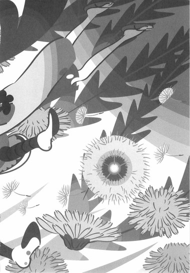
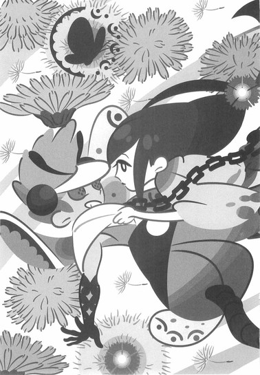
前振りのごとき事前の動作は彼女には必要ない。
無構──零の構え、『無花果』。
そのままふたりは一体となって、地面に落ちる。
忍法足軽の効力は切れたらしく、かなり乱暴な着地となった。その衝撃に七実は少しだけ顔をしかめた──
「ば、ばかな......」
ごぶ、と、濃血を吐き出しながら──蝶々は七実の顔に、信じられないものでも見るような眼を向けた。
それは忍法足軽をたやすく体現されたことに対する驚き──ではない。
そうではなく、単純に──彼女の貫手に対して、蝶々は驚愕していたのだ。
「ただの貫手で──人間の身体を貫くなど......、ばかげている......ありえない。い、いや、それ以前に、鎖だって──」
七実の貫手は、蝶々の身体中に巻かれ──当然、心臓の上も防御していた例の鎖をも、断ち切っていた。蝶々が、生き残る伏線としてかろうじて張っていた、蟷螂が残した例の臙脂水晶の片割れさえももろともに──砕いていた。
無刀の剣法。
貫手が日本刀による刺突並、いやさそれを遥かに超える威力、破壊力を持つ。
それが虚刀流なのか──！
「いいえ、違いますよ」
その表情から蝶々の心中を読んだらしく、七実は貫通させた手をゆっくりと抜き取って──血まみれになったその指先を、彼の眼前に晒した。
「『蒲公英』は相手を引き寄せながら繰り出す、組技としてのただの貫手。ただの貫手は、あくまでもただの貫手です。常識的に考えて、刺すことはできても、貫くことなんてできるわけがないでしょう──まあ、七花ほどの腕力があれば別なのかもしれませんが。これはあなたのお仲間の、蟷螂さんの技ですよ」
見れば。
七実の指先は──鋭く尖っていた。
否、違う──尖っているのは、爪先だ。
彼女の爪が──まるで刃物のように、伸びていた。
「な──な、な──」
「こちらの忍法は一回しか見せてもらえませんでしたからね──とっさのことでしたし、二寸ほど伸ばすのがやっとでしたが。まあ、次からはもう少しうまくいくでしょう」
忍者が拷問に屈するはずがない。
それは七実には最初からわかっていることだった──ならばどうして、蟷螂を木に縛りつけるような真似をしたのか。
それも、わざと両腕を後ろ手に縛らず──！
最後には不用意に近付いて攻撃を誘うようなことまでして──！
「あ、ああああ──」
蝶々は──震えながら、慟哭する。
その震えは恐怖か──それとも怒りか。
あるいは、ただの、肉体が死に至る過程の痙攣か。
「こ、こんな──お、おれたちの真庭忍法を、そんなたやすく──お、おれたちが、いったいどんな思いで──どれだけの修練を積んで──ありえねえ、ありえねえ、ありえねえ、ありえねえ！」
「本当──だから、うらやましいですよ。いちいち細々したことで、力いっぱい頑張れて。なんでもできる人間の苦悩なんて、全力を出せない人間の苦悩なんて、あなた、きっと考えたこともないでしょう？」
それでもなけなしの力を振り絞って、七実にすがりついてくるかのような動きを見せた真庭蝶々を、つれなくするりとかわして──血化粧に染まった自分の着物を気にするようにしながら、鑢七実は距離を取る。
そして──末期の一服をすることもなく、そのまま命尽きていく蝶々の身体を冷めた眼で、とてもつまらなそうに看取りながら、やはりゆっくりと、ため息をついた。
「さてと......この戦いは、どこかから見られていたはずなんだけど──どこなのかしらね。ここを十全に見渡せる位置と言えば──」
四章 病魔一億
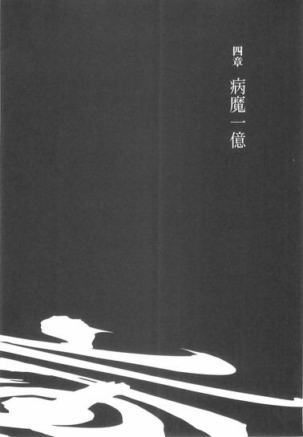
■ ■
現日本最強、堕剣士、錆白兵のことを、奇策士とがめは、生まれてくる時代を間違えた男だと評した。その評価は恐らく正しい──彼は戦国の世にこそ生まれるべき人間だった。もし彼が生まれるべき時代に生まれていれば──虚刀流の初代当主、鍍一根や、あるいはその生涯に千本の変体刀を作り、戦国の世を支配したと言われる四季崎記紀と、同世代に生まれていたならば、歴史は変わっていただろう──変わったその歴史が、本来の正しい姿なのかどうかはわからないが。
それはさておき──しかし、錆白兵が生まれてくる時代を間違えた男だという、奇策士とがめのその言にのっとって言うなら、鑢七実は──そもそも、生まれてくるべきではなかった女だった。
最初から、何もせずに到達している。
数々の武芸者が血反吐をはきながら会得した究極の技術を、何の労苦もなく、最初から体現してみせる──
そんな例外的な強さ。
そんな反則的な強さ。
そんなものは──最早強さでもなんでもない。
だから神は、彼女に罰を与えた。
彼女が優れ過ぎているという理由で──
■ ■
真庭虫組、最後のひとり──真庭蜜蜂は即座に行動に移ることにした。
大局的に見て、ここでその選択肢を選ばないという道も、彼にはあった──たとえばこの場合、多くの者が選び取りたいと思うはずの選択肢は、戦略的撤退だろう。
虚刀流の姉がまさかあれほどの実力者であろうとは、まったくの想定外だった──『首狩りの蟷螂』と『無重の蝶々』が相次いで敗北を喫することになったのだ、同じ頭領とは言え、そのふたりよりもしのびとしての格が落ちる蜜蜂が、勝負を挑むべき相手ではない。
正直言って、蜜蜂も、取れるものならその選択を取りたかった──虚刀流の姉を拉致しようという作戦は、もうなかば破綻しているようなものだ。あそこまで腕の立つ女であると知っていれば、違う作戦を取っていたのだ──知っていればこの島には近寄りもしなかっただろう。だからここは一旦退いて策を練り直すのが妥当な選択であることは、確実だ。
しかしここで、不承島をおとなうにあたって船を使わなかったことが裏目に出た。蝶々が倒されてしまっては、蜜蜂ひとりでは本土に戻る手段がない。この自然豊かな島のこと、木を切り倒して一からいかだを造るという手があるにはあるし、しのびの蜜蜂にはそれだけの技術もあるが、その作業に少なからず時間を要することは避けられない。
こちらの存在はあちらにはばれている。
蝶々で最後──島に来たしのびは蟷螂と蝶々のふたりだと七実が思っていれば助かるが、そんな都合のいい考え方をしてくれはしないだろう。ふたりいれば三人いると思うのが当然だ。いかだ工作にいそしんでいるうちに、七実に後ろから襲われてはたまらない。
退路は既に絶たれているようなものだ。
撤退という選択肢は、既に奪われている。
いやでも挑まざるを得ない。
そして挑むとなれば、即座に行動に移るべきだった。蝶々と鑢七実との勝負──露骨に言えば真庭蝶々の敗北は、それはそれは無残なものだったが、しかしさすがは真庭の頭領である、ただでは負けはしなかった。
離れて戦闘をうかがっていた蜜蜂に、有益な情報をもたらしてくれた。
勝負終了後──彼女は崩れ落ちるように、片膝をついたのだ。そして咳を繰り返し、苦しそうにえずいていた。
蝶々が彼女に何かをした様子はない。
最後の力を振り絞ったとおぼしき、彼女をつかまえにいった動きさえ、軽く避けられていた──ならばあれは、彼女の性質に由来するものだ。
鑢七実に体力がない。
もっと言えば──あの女の身体は、酷く弱い。
ぼろぼろと言ってしまってもいい──
あの青白い肌に細い身体で、あれだけの戦闘を繰り広げたのは見事のひとことに尽きるが、しかし、蝶々の攻撃を一度も食らわなかったにもかかわらず、あそこまで消耗しているようでは──武芸者とは言えない。
実際──もしも奇策士とがめが、七実の実力が七花よりもはるかに勝るという事実を知っていたとしても、旅の道連れに、あえて彼女は選ばなかっただろう。七実の強さには持続性がない、それは長旅には向かないということである。
七実の虚弱さは致命的だ。
彼女は勝てても──勝ち続けることはできないのだ。
真庭蜜蜂もまた、そう判断する。
ならば、ここは連戦に持ち込むべきだった。
蟷螂と戦い、蝶々と戦い、その疲労は抜けていないはず──確実にその虚弱な体内に蓄積されているはずだ。ならばあのふたりの犠牲を無駄にしないためにも、蜜蜂は迅速に行動するべきだった。
虫組の絆は死んだ程度でほつれたりしない。
蝶々の言うとおりだ。
──しかし、悔やまれる。
あと三人──否、あとふたりでも一緒に、この不承島に来ていれば──修羅のごとく強いあの女であろうと、確実に拉致できただろう。だが、たったひとりの女を誘拐するために、天下の真庭忍軍の頭領が五人も六人も出張るなど、ありえない。それはあってはならないことだった。三人でも、本来は多過ぎるくらいだったのだ。
だから、とても賢明とは言えないが──ここは蜜蜂ひとりで、虫組最後のひとりとして、鑢七実に挑むしかないのだ。
──こんな命がけの戦いになるはずじゃあ、なかったんだがな。
こんなはずじゃなかった。
あくまでも、虚刀流──鑢七花と、奇策士とがめから、完成形変体刀を奪うための下地作り、下ごしらえみたいなものだったはずだ。
なのに。
「..................」
ただし──正々堂々と、正面から勝負を挑むような愚を冒すつもりは、蜜蜂にはない。蟷螂と蝶々が勝てない相手に蜜蜂が勝てるわけがない──という理屈以上に、彼女は、蟷螂と蝶々の忍法を、吸収してしまっている。
忍法爪合わせ。
忍法足軽。
彼女がそれらを使い、使いこなし、蝶々を制したのを蜜蜂は見ていた──信じられないことだが、交わされていた会話も加味して判断する限り、あの女は敵の技を憶えることができるのだ。
忍法足軽のほうはわかる──わからなくもない。あれは歩法だ。海を渡るなんてことはさすがに無理でも、一歩や二歩なら、蜜蜂にだって真似られなくはない──だが、忍法爪合わせはどうだ？人体生理を意図的に操作しなければならないあの異技を、ああもたやすく、しかも当たり前のように体現してみせるとは──信じがたい。
まるで悪い夢だ。
真庭忍軍十二頭領のひとり、真庭蝙蝠は、忍法骨肉細工と言って、他人の姿かたちを完全に写し取れる技を持っていた。しかしあれは、あくまで姿かたち、肉体的な能力、肉体的な才能を写し取る技であり、使用する技までは真似られなかったはずだ。
あの女には、それができるというのか。
──だが、それも──蝶々さんが命がけで託してくれた情報だ。
信じざるを得ない。
認めざるを得ない。
数の上では一対一でも、それでは鑢七実に加えて、真庭蟷螂と真庭蝶々も、同時に敵に回しているようなものだ。実質、三対一である。これでは蜜蜂が真庭忍軍でなかったところで、正面から勝負を挑もうという気になるわけがない。
──島育ちで、よかったようなものだ。
あの目で世間を知っていたら──そう考えるとぞっとする。
無人島に閉じ込めておくのが正解だ。
もちろん、七実がその目を獲得したのはこの不承島に閉じ込められてから──島に閉じ込められたがゆえのことなので、真庭蜜蜂のこの考えはあまり正しいとは言えないのだが──どちらにせよ。
──不意打ちしかない。
相手に察せられる前に、勝負を決めてしまうしかない。そして幸いなことに、真庭蜜蜂の忍法はこの状況にはうってつけのものだった。
忍法撒菱指弾。
しのび道具のひとつである撒菱を親指で弾いて、鉄砲の弾丸のように飛ばす技である。本来逃走の際に使用する道具である撒菱を攻撃に使用するというのは、蜜蜂らしい発想の転換と言えた。撒菱は本来指弾には適さないはずだが──しかし彼の指弾は、百発百中の命中率を誇っていた。虫組の三頭領のうちで唯一大太刀を帯びてはいるものの、そちらは蜜蜂にとってはあくまで二番目の武器だった。
『棘々の蜜蜂』。
撒菱指弾──遠距離攻撃が、蜜蜂の本領だ。
射程距離は実に二十丈に達す。
忍法爪合わせや忍法足軽に較べれば派手さは劣るが、しかし、この時代において、遠距離の攻撃手段を有する者の強さは語るまでもないだろう。そして撒菱指弾は鉄砲と違い、火薬の匂いも音もしない。あの女は気配を消して潜んでいたはずの蝶々に、ある距離まで近付いた時点で、あっけなく気付いていた。逆に言えば、あのときの七実と蝶々の距離以上に離れていれば──あの女はこちらには気付かないということだ。
虫組の五感の鋭さが、ここで役に立つ。
放ったうちの半分でも相手に当たればよかろうの、真庭蝙蝠の手裏剣砲とは違い、蜜蜂の撒菱指弾は一点突破の精密射撃である。気配に気付かれる距離の外から撒菱指弾を撃てば、いくらあの女でもかわしようがないはずだ。とはいえ、むろん、あの女に関しては、本当に掛け値なく、用心して用心し過ぎるということはない。蟷螂や蝶々との戦闘を通じ、虫組の超感覚を彼女が獲得していないとは限らない。蜜蜂の射程距離ぎりぎり──二十丈離れた場所から、彼女の背後を狙うことになる。
精密射撃だ、外すことはない。
撒菱指弾の命中精度には絶対の自信がある。
ただし、さすがにそこまで離れてしまうと、弾いた撒菱から殺傷能力は失われる。皮膚を食い破り、肉に突き刺さりはしても、骨や内臓には届かないだろう。いくらあの女の身体が虚弱であったところで、そこまでは望めない。
──だから、毒。
撒菱に毒を塗る。
死に至るような毒ではない──しばらくの間、昏倒してもらうだけだ。忍者に対して毒を使用するのが卑怯だなどとは言わせない、そもそもあそこまで例外的な強さを、しかもどうやら何の努力もなしに獲得していることのほうが、よっぽど卑怯ではないか。
──本音を言えば、致死性の毒を使用したいくらいだ。
殺しておくべきなのではないか、と思う。
生かして利用するには、あまりにも化物過ぎる。あんな女が果たして人質として機能するのかどうか、怪しいところだ。
だがそれは、蟷螂と蝶々、犠牲になったふたりの遺志に反することになる。虫組最後のひとりとして、この作戦は、是が非でも、絶対に成功させなくてはならないのだ。
たとえ三人のうちふたりが死のうとも。
ひとりが生き残れば──それで勝利だ。
それが、しのびの生きる道である。
そして奇策士とがめと鑢七花から、変体刀を三本、奪い取る──！
「見ていてくださいよ──蟷螂さん、蝶々さん──」
地面に横這いになり、伏撃の姿勢で──真庭蜜蜂は撒菱を構える。腕を伸ばし、それを鉄砲の銃身に見立てて──
およそ二十丈先を歩く、鑢七実に狙いを定めた。
蝶々との戦闘後、蝶々の身体をそのままに、その場からふらふら歩き出した七実の──帯の結び目の、少し上を。
百発百中の精密射撃──それに必要なのは何よりも強靭な精神だ。絶対に外すわけにはいかないという気持ちは逆に大きな枷となる──撃つのは毒を塗った撒菱だ、変に力が入って自分の手や指を傷つけてしまえば、元も子もない。
機会は一度だけ。
毒が塗ってある以上急所を狙う必要はない、身体のどこに当たっても効果は十分見込まれる。胴体の中心を狙えば、まず外すことはないはずだが──しかし、もしも外せば、撒菱の飛んできた方向を一瞬で判断し、あの女は一気に距離を詰めてくるだろう。どれだけ病弱であろうとも、相手はいまや忍法足軽を会得しているのだ。次の撒菱を装填している暇はないと思っておいたほうがよい。
蝶々の胸を貫手で貫いた手際から判断する限りにおいて、あの女は人をあやめることに何の躊躇も持っていない。島育ちの、実戦経験があるとはとても思えないあの女だが──しかしおそらく、蟷螂を殺したときもそうだったのだろうと確信させるほど、あれは迷いのない貫手だった。
だから。
百発百中では、まだ駄目だ。
一発必中──そうでなければならない。
それを成し遂げるだけの精神があるかどうか。
僕にはある。
僕だって──蟷螂や蝶々と同じ、頭領だ。
「忍法──撒菱指弾」
真庭のしのびの誇りを乗せて。
神経毒したたる蜜蜂の撒菱が、鑢七実の背中目掛けて──発射された。
■ ■
回想、その三。
これが今回、最後の場面回想。
それは果たして、何年前のことか。
一年前のことではない──二十年前のことでもない。
それよりも更に、昔のことだ。
島流しに遭う前のこと。
鑢七実は病床に臥せっていた。
身体中が燃えるように熱く、全身を痛みが支配していた。こんなに苦しいのに、小指の先すら動かすことができない。頭の中に雑音が絶え間なく鳴り響いているようで、目を開けることさえ不可能だった。およそこの世に存在する全ての苦痛が、自分の小さな体躯の中にぎゅうぎゅうに詰め込まれているかのようだ。
──いつ死んでもおかしくない。
医者が枕元でそう言うのが聞こえた。
七実に意識があるとは思っていないのだろう。
──いつ死んでもおかしくない──否。
医者は言葉を繋げる。
本当に不可思議そうに──首を傾げながら、続ける。
──どうしてまだ死なないのか、わからない。
──この娘は。
──どうして生きているのだろう──
そこでいったん七実の記憶は途絶える。砂嵐のような画像が延々と続く──完全に壊れてしまったかのように、砂嵐と雑音が続く。が、やがて、徐々に映像が紡がれていく──視界が安定していく。
──かわいそうに。
雑音に混じって、そんな声が聞こえた。
女の声だ。
七実は、すぐにそれが、自分の母親の声だと気付く──母親が枕元にいるのだ。医者はどこへ行ったのだろう？
それに──父さんは。
いたはずの弟は──どこへ行った。
みんな、どこへ行った。
なぜ、母親だけが、ここにいる──
──本当に、かわいそうに。
母親は独り言のように続ける。
実際、それは独り言なのだろう。
今の七実に意識があるなどと言っても、そんな戯言は、誰も信じないはずだ。当人の七実ですら、なぜ自分が意識を失わないのかわからないほどの苦痛に、全身という全身をさいなまれているのだから。
意識不明になれたらどれだけ幸せだろうと思う。
いっそ、死んでしまえたら。
死ぬことができれば。
本当に──どれだけ幸せなのだろうか。
──あなたはかわいそうな子よ。
母親は繰り返す。
執拗なほどに──しつこく繰り返す。
──かわいそう──本当に。
──楽に死ぬことさえできないだなんて。
──かわいそう。
そこでまた、七実の記憶は途絶える。もやがかかったようにぼやけていく──そもそも七実は、高熱で目も開けられなかったのだ。記憶に映像が残っているわけもない。声が聞こえただけで、そこに本当に母親がいたのかどうか、わかるわけもないのだ。苦痛の中で聞いた、ただの幻聴だったのかもしれない。
この回想だって、本当にあったことかどうか、彼女にはわからないのだ。
だいたい、母親のことなんて......あの人のことなんて、わたしはさっさと忘れてしまいたいのだから──あの人のせいで、あの人がいたせいで、父さんとわたしと七花は、島流しの憂き目に遭ったのだから。
回想終了──
■ ■
背後から迫る撒菱の空気を切る音にすんでのところで勘付いて、鑢七実は振り返った──しかし、その振り返った彼女の身体の中心に、撒菱指弾は命中する。
着物を貫いて、その棘は腹部の皮膚を食い破った。
こうなってしまえば、何をしようともう遅い。真庭蜜蜂が撒菱指弾に使用する撒菱は、特別仕様である──棘々のそれぞれに釣り針のような返しがついていて、一度刺さりさえすれば、そう簡単には抜けない。慎重にやらないと、引き抜こうとした指の側に棘がささることになる。そんな風にもたもたしているうちに──毒はどんどんと、身体を巡るだろう。
よろり、と七実はふらつく。
ぎりぎりで立ち直るが、その足下は、明らかに覚束無くなっている風だ。
「..................」
そんな中でも──七実は、撒菱の飛んできた方向を、じっと探った。それは狙撃された直後の人間のものとはとても思えないくらいに、冷静な視線だった。元々青白い肌なので、毒の回り具合は外見からではよくわからないが──確実に、腹部から全身へと、それは巡っているはずなのに。
「誰か......そこにいるのですか」
弱々しい、七実のそんな呼びかけに応じるようにして──堂々とした足取りで、真庭蜜蜂は、木々の向こう側から現れた。
この状況でもなお用心深く、手には撒菱を備えている。
七実が妙な動きを見せればいつでも発射できる態勢だ──当然その撒菱にも、同じ毒が塗ってあるのだろう。
「僕は真庭忍軍十二頭領がひとり──真庭蜜蜂です」
「......鑢七実です」
蜜蜂の名乗りに対して、七実の名乗りは随分と短かった。毒が効いてきて、舌の回りも覚束無くなってきたのだろうか。
「僕の仲間をふたり──殺してくれましたね」
「ええ──」
七実はゆっくりと、周囲を窺うようにしながら、喋る。
「殺してさしあげました──蟷螂さんと......蝶々さんと仰いましたか」
「ははは」
蜜蜂は、そんな七実を軽く笑う。
「そんな風に周りを警戒しなくとも、僕が最後のひとりですよ──まあ、今のあなたに対するのならば、僕ひとりだけでも十分過ぎるほど十分でしょうけれどね」
「......毒、ですか」
「ええ──毒です」
用心深い足取りで──しかし、既に勝利を確信した動きで、撒菱の照準を七実から外すことなく、蜜蜂は言う。
「ご安心ください、死ぬほどの毒ではありません。少しの間、あなたに大人しくなってもらうだけです──蟷螂さんや蝶々さんからお聞き及びでしょうが、僕の目的はあなたじゃない──あなたの弟さんです。もっと言えば、あなたの弟さんが集めている四季崎記紀の完成形変体刀です」
「..................」
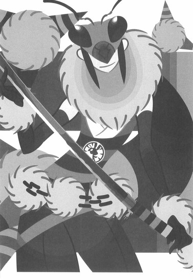
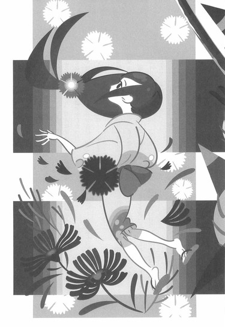
「本音を言えば、あなたを殺してしまいたい気持ちはあるのですがね──しかしそうすることで晴れるのは、みすみす仲間を殺されてしまった、僕の無念だけでしょう。蟷螂さんや蝶々さんの無念は、刀集めを達成してこそ、晴らせるというものです」
「よく......喋りますね」
ふらふらしながら、七実は後退し──背後の木にもたれかかることで、かろうじて膝をつくことなく、直立の姿勢をたもった。
「やはり、人は......自分が優位に立ったときこそ、餞舌に──なるものなのですね。しのびといえど、それは例外では......ありませんか」
「............？」
拷問にかけても、蟷螂が何も喋らなかったこと──それに、勝負の前に問答しても、蝶々の言葉からではあとに控えている人数まではわからなかったことを含めて、言っているのだろうか。確かに蜜蜂は、今、別にこの場で言う必要のないことを言ったかもしれない。しかし、それは──その程度のことは、こうなってしまえば、言ってはいけないことではないはずだし、だいたい、それに。
「そんなことは──当たり前のことでしょう。得意げに、新発見をしたように指摘するようなことじゃない──」
「それはそれは──なにせ、ここ二十年ほど、ほとんど人と会っておりませんから......わたしには人間というものが、よくわからないのですよ。試せるのであれば、いろいろと試してみないと──」
「......なかなか、気丈ですね」
蜜蜂はそんな七実に、声を低めて言う。
「死なないとは言っても、普通、もう喋れなくなってもおかしくないくらいの毒なんですけれど──念のためにもう一発くらい、撃ち込んでおいたほうがいいのでしょうか？」
そして撒菱を構える。
脅しの意味も込めて、相手からよく見えるように──だ。
ふたりのあいだの距離は一丈ほど。
いくら七実が弱っていても、まだ彼女が立っていられる以上、これよりもそばに接近するのは危険だろう。たとえ忍法爪合わせのことがなくとも、何を仕掛けてくるかわからない。
それに──一丈なら十分だ。
撒菱指弾はこの距離なら確実に人を殺せる技となる。細心の注意を払い、できる限りの手加減をして撃たないと、撒菱は容赦なく七実の身体を貫通してしまうことだろう。
「それがあなたの──忍法ですか」
「ええ。忍法撒菱指弾と言います」
「ふ......うふふ」
七実は──苦しそうに、無理矢理のように、微笑を浮かべた。
弱々しくはあるが、しかし邪悪そうな──微笑である。
「その技をわたしに──見せてしまって、いいのですか？」
その台詞から、蝶々と七実との戦いを彼が覗き見していたことが、どうやらばれているらしいことを蜜蜂は知る──しかしそれも、今となってはどうでもいいことだ。
蜜蜂は言う。
「今のあなたになら、何を見られても平気ですね──たとえあなたが言語道断、空前絶後の天才なのだとしても、忍法撒菱指弾はそんな状態で使用できる技ではありませんよ」
だいたい、と、狙いを定めたままで、蜜蜂は続ける。
「蟷螂さんの忍法爪合わせや、蝶々さんの忍法足軽と違って、これは撒菱ありきの技ですからね──知られたところで、撒菱を持たないあなたには使うすべがありません。それとも、あなたがしのび道具である撒菱を、たまたま携帯しているという裏設定でもあるんですか？」
「..................」
「随分とお強いつもりのようですが──鑓七実さん。今のあなたの状態では、何を言っても強がりにしか聞こえませんよ」
「......わたしは、自分を強いだなんて思ったことは──一度もありませんよ」
七実は言った。
「ただ──あなたがたが、弱いだけ」
「は──それも強がりと、聞き逃してあげましょう。......もしもあなたがこれ以上無駄な抵抗をしないというのでしたら、僕もこれ以上無駄な攻撃をしないと約束しますよ。弟さんに対する人質として、大人しく僕に従っていただけるようなら、そんなことをする理由はありません。僕もひとりの男として、あなたの美しい肌に傷をつけるのは忍びないと思います」
「それは──どうも」
と、言い終わると同時に──七実は動いた。
否、動こうとした。
頭から一直線に蜜蜂へと駆け込むようなその動きは、しかし、音もなく発射された蜜蜂の撒菱指弾に封じられた。たとえ封じられなくとも、それは最初から、駆け込む動きから倒れ込む動きへの過程のようなものだったので、蜜蜂のところにまで彼女の身体が届いたかどうかは疑問だったが──しかし蜜蜂は、前のめりに倒れることさえ、七実に許さなかった。
今度もまた、腹部に決まった。
着物を突き破り──皮膚を突き破り──肉を食い破る。
その衝撃で七実は、背後の木に勢いよく叩きつけられた。
「かふっ──」
そんな息が、喉の奥から漏れた。
そのまま、ずるずると彼女の体勢は崩れ──もう直立してはいられないらしく、木の根元にしゃがみ込むような形になった。
焦点の合わない、うつろになった目が──ぼんやりと、蜜蜂のことを見つめている。
「............、............、............」
「さすがに──もう、喋れませんか」
言いながら──蜜蜂は、もう、新たな撒菱をその手に装填しようとはしない。その必要はない......と言うより、致死性ではない神経毒とは言え、撒菱三発分を撃ち込むのは、いくらなんでもやり過ぎだ。七実の病弱さ、虚弱さを思えば尚更である。もしも三発目を撃つなら、撒菱から毒を洗い落としてからでないと──
しかし、その代わりとばかりに。
真庭蜜蜂は、腰に差していた大太刀を──ひと息に抜刀した。
「.........、............、.........、.........」
呼吸を荒くするばかりで、七実はその光る刃を見ても、反応らしい反応をしない。案外、目こそ開いているものの、意識はなくなっているのかもしれなかった──少なくとも極度の混濁状態にあるはずだ、と蜜蜂は思う。
どんな達人でも毒と病気には勝てない。
そのはずだ。
「今はそんな風に大人しくなっていても、毒が抜けてしまえば元の木阿弥ですからね。僕は物事を客観的に見る──あなたが僕なんかよりもずっと腕の立つ人間であることは、承知しています。ならば──あなたが大人しいうちに、その立つ腕を、両方とも切り落としておくくらいのことはしておくべきでしょう」
「........................」
「それほどの痛みはないはずです。敗者を甚振る趣味はありません──あなたの全身を巡る毒が、ちょうどいい痛み止めの役割をしてくれるでしょう。悪く思わないでくださいよ──あなたが強過ぎるのが悪いんですから。......片腕で勘弁してやろうという気に、まったくならないんですから──」
言って──蜜蜂は大太刀を構え、木の根元にうずくまった七実との、距離を詰める。七実はやはり反応しない──蜜蜂が大上段に振りかぶるのを見てさえも。
「──はあぁ！」
気勢を発し──そのまま蜜蜂は大太刀を、迷いなく振り下ろした。七実が背をあずけている木の幹もろとも、彼女の腕を一気に切り裂くような気持ちで──！
「........................っ!?」
切り裂いた。
と、思った。
しかし、現実に蜜蜂の大太刀が斬ったのは──彼女の背後の、木のみだった。刀が木の幹だけにとどまらず、その根元にまで深く食い込んで──そして、ただそれだけのことだった。対象物を斬らずに対象物の向こう側にあるものだけを斬るという剣術の奥義が存在するが、むろん、剣士ならぬしのびの真庭蜜蜂に、そんな奥義を体現できるわけもない──
ならば果たして、鑢七実は。
蜜蜂がわけのわからない混乱から回復し、そう思う頃には──もう遅かった。肩口に鋭い痛みが走ったのである。見れば──そこに棘々の撒菱が、深々と刺さっていた。
しのび装束を突き破り──皮膚を突き破り──肉を食い破っている。
「......な、えっ......」
そこに走る痛みに崩れ落ちそうになりながらも、蜜蜂は気力を振り絞って背後を振り返る──そこには鑢七実が、何にもたれるでもなく、何に身体を預けるでもなく、だからと言って強いて構えるでもなく──けだるそうに、佇んでいた。いや、腕をだらんと下げたその姿勢のことを、確か彼女はこう呼んではいなかったか。
零の構え『無花果』──
「な、......、い、いつの間に、後ろに──」
「......忍法足軽」
静かに──ゆっくりと、そしてため息交じりに、七実は言う。
「......、と、それに足すことの、虚刀流の足運び。ふむ。瞬間移動とはいかないまでも、ふたつ組み合わせれば、これくらいの速度は出せるということみたい──ですね」
そして更に加えて──と、七実は自分の右手を、わざとらしく蜜蜂に示してから、親指を強く弾く動作をする。
「えっと、確か......、そう、忍法撒菱指弾......でしたっけ？」
「な──」
肩に刺さった撒菱を思えば──ここは既に、何かを訊いたり、その答に驚いたりするような場面ではない。考えるまでもない──蜜蜂の太刀を、まるで瞬間移動がごとき動きで回避した七実が、更にそこから攻撃に転じたのだ。よりによって、撒菱指弾で──！
「ま、撒菱を持っていたんですか──あなた──そんな──都合よく？あなたが撒菱を持っているだなんてそんな設定、ここまでのどこにも登場していない──」
「あなたがくれたのではないですか──二個も」
七実はそう言って、親指を弾く動作をやめて、自分の着物を示す。着物を食い破った蜜蜂の撒菱──は、ひとつしか刺さっていない。
もうひとつの撒菱が──最初に炸裂したはずの撒菱が、見当たらなかった。
「撒菱指弾──遠距離攻撃が可能なのは素晴らしいですが、攻撃することによって相手に武器を与えてしまう結果になるのは、ちょっとばかり残念ですね──」
「な──し、しかし！ 肉に食い込んだ撒菱がそう簡単に引き抜けるはずがない！棘に返しがついているんですから──」
「ですから」
今度、七実が晒したのは左手だった。
その左手の爪が──かなり不自然な具合に伸びている。
まるで、刃のように。
忍法爪合わせ──
「周囲の肉ごと、抉り取りました」
「..................っ！」
ぐらり──と、蜜蜂の視界が歪む。
七実が自分で自分の肉を抉ったというその事実から受けた衝撃の大きさもさることながら──しかし、ただそれだけではない。そう、自分が撃った撒菱をそのまま撃ち返されたということは、その撒菱には毒が塗られているということである。その毒は、みるみる、蜜蜂の全身を巡っていく──！
「こ、こんな──こんなことが......ぼ、僕の忍法撒菱指弾が──一回見たくらいで──」
「いえ──お世辞抜きで、この技、結構難しいみたいですよ？とりあえず背中の真ん中を狙ったつもりだったのですけれど、随分と右斜め上に逸れてしまいましたし......それに、この近距離なのに、思ったほどの威力も出ませんでした。これ、地味に難易度が高いです──できれば二回見ておきたかったですね」
「く、ああ──」
声にならない。
それは毒のせいか、それとも悔しさのせいか──
身体が思い通りにならない。
いや、待て、気持ちを切るな──集中力を切るな。まだ勝負は終わっていない。たとえ撒菱を撃ち込まれようとも急所は外れている、撒菱を抉り取るなどという乱暴な措置を取った七実のほうが、受けた肉体的損傷は大きいはず。そして何より、こちらが受けた毒は一発分、あちらは二発分、ならば互いの身体の大きさを考えれば、利はどうしたってこちらにある──
「──え」
そこでようやく──蜜蜂は気付いた。
毒は──毒はどうした？
忍法足軽にせよ、虚刀流の足運びにせよ──あるいは忍法爪合わせにせよ、忍法撒菱指弾にせよ──あの神経毒を撒菱二個分食らっておいて、繰り出せるような技ではないだろう！
意識を失う直前だったはずではないか！
あの痛みは──痛みはどうした！
「ああ。あれは演技ですよ」
いともあっさり、七実は悪びれもせずに言う。
「死にもしない程度の毒など──わたしにとってはなんでもありません。あなたがたがわたしを生け捕りにしようとしていたのはわかっていましたから、たとえ撒菱に毒が塗ってあったとしても、そんな程度だろうと読んでいました」
「なっ......」
なんだその......、一発目の撒菱も二発目の撒菱も、本当は避けられたのにわざと食らったかのような言い草は──！蜜蜂の油断を誘うために、故意に追い詰められた風を装っていたかのような物言いは──！
撒菱指弾をよく見るために。
真庭蜜蜂をよく喋らせるために。
島に来ている忍者が三人だと──蜜蜂で最後なのだと知るために、あえて罠を仕掛けたとでも言いたげな、その態度は何だ──！
「う、......あうあ、あ、あう、うあああ」
舌がもつれる。
毒の効果だ。
この毒が──なんでもないなど、ありえない。あっていいはずがない。たとえ鑢七実が天才であろうと、......言語道断であろうと空前絶後であろうと......、どんな達人でも、毒と病気には勝てないはず──！現に蜜蜂は、撒菱指弾一発分の毒を体内に注入されただけで、身を引き裂かれるような痛みが身体中を走っているというのに！
「......身を引き裂かれるような痛み？」
七実は、自分の身体に食い込んだもう一個の撒菱もまた、左手の爪で、周囲の肉ごと抉り取るようにしながら──言う。
自分の肉を自分の爪で抉りながら。
表情ひとつ変えずに言う。
「そんなものは──わたしにとっては日常です」
「..................」
「あなたの言葉を借りるならば、ちょうどいい痛み止め──ですよ。苦しみも痛みも、わたしにとっては付き合いの長い友人のようなものです。今更ひとつやふたつ増えたところで──文字通り、痛くも痒くもありません。否──痛し痒し、ですか」
鑢七実──生まれてくるべきではなかった女。
最初から、何もせずに到達している。
数々の武芸者が、血反吐をはきながら会得した究極の技術を、何の労苦もなく、最初から体現してみせる──
そんな例外的な強さ。
そんな反則的な強さ。
そんなものは──最早強さでもなんでもない。
だから神は、彼女に罰を与えた。
彼女が優れ過ぎているという理由で──彼女の肉体に、一億の病魔を与えた。ひとつひとつが十割に限りなく近い致死率を誇る病魔を、遠慮忌憚なく彼女の身体に詰め込んだ──それぞれが慢性的に合併症を引き起こしながら──彼女の身体を遠慮忌憚なく責めさいなむ。
しかし彼女の天才性は、その病魔すらを拒絶する。
毒も病気も──拒絶する。
どれだけ苦しく、どれだけ痛く、どれだけ死にそうであっても──彼女の身体は死を選ばない。これ以上なく病弱で、どうしようもなく虚弱でありながら──ぎりぎりのところで踏みとどまって、彼女は生き続けるのだった。
死にぞこないという言葉さえ、ふさわしくない。
彼女は、そう──生きぞこないだ。
一億の病魔に括抗する桁外れの治癒力を有する肉体。
爪で抉った腹部の傷も──すぐに跡形もなく消えてなくなるだろう。
蜜蜂は理解した。
実戦経験に欠けるはずなのに、この女がためらいもなく蟷螂や蝶々を殺せた理由を──この女にとっては、痛みや苦しみと同様、死もまた、付き合いの長い友人なのだ。
だから──死ぬことも殺すことも。
あるいは、殺されることも。
最初からなんとも思っていないのである。
「本当に──わたしは、あなたがたがうらやましい」
無事に抉り取った撒菱を、毒に注意しながら手の内で弄びつつ──七実は、流し目で蜜蜂を見、そして言う。
「あたりまえに健康なあなたがたが──心底、うらやましい。こんな才能、ちっともいらなかった。わたしが欲しかったのは、健康な身体と、ささやかな──夢」
夢を叶えることのできない身体。
夢を見る必要のない才能。
そんなものは──どちらも、いらなかった。
「く......ああああああああああああああっ！」
それでも──渾身の力を込めて、真庭蜜蜂は天に向けて咆哮した。真庭蟷螂や真庭蝶々、あるいはこの島の土の中に眠る真庭蝙蝠、そして四季崎記紀の刀集めの最中で犠牲となった真庭白鷺や真庭喰鮫に届けとばかりに──大声をあげる。
「まだだ！ まだ負けじゃない──きさまが耐えられるような毒に、僕が耐えられないわけがない！まだ僕は戦える──ここから先は精神力の勝負だ！ここで力尽きるわけにはいかない、僕はまだ戦える！」
「いえ──無理だと思いますよ」
しかし、そんな必死の叫びすらも──鑢七実には届かない。
「あなたの肩に撃ち込んだその撒菱なのですけれど──あなたが最初から塗っていた毒の上から、更にわたしが別の毒を塗っておきましたから」
「...............！」
「最初にわたしを襲ってきた忍者──蟷螂さんが奥歯へ仕込んでいた毒なのですけれど。......わたしがそういう毒を持っているという設定は、ちゃんと登場してましたよね？」
さすがにそんな毒を血液中に撃ち込まれてしまっては、わたしでも死んでしまうでしょうね──と七実は言った。
「毒を使用するのが卑怯だなどとは──言わせませんよ」
「あ......、ああ......、ああああ......」
自決用の毒──致死性の毒。
ならば、もう──勝負は決していた。
肉体も精神もあったものではない。
避けようもない絶望に、蜜蜂は青ざめる。
しかし──彼がいくら青ざめても、その青さは、鑢七実の肌の色には及ばない。
死にかけの──生きぞこないの彼女には及ばないのだ。
「......折角ですから、選んでいただけませんか？」
それでも崩れ落ちず、かと言ってどうすることもできずに呆然となる真庭蜜蜂に、七実はそんな言葉をかけた。
「毒で死ぬか──刀で死ぬか」
「..................」
「ちょうど試してみたい技があったのです──島を出る直前に一度見てあげた切りで、そういえばまだ、わたし自身は試していませんでしたから。......もちろん、わたしは別にどちらでも構いません」
その問いに。
真庭蜜蜂は、引きつったような笑みを浮かべ──しかし迷いなく、
「刀で殺してください」
と言った。
「自決の毒で死んだなど──仲間に顔向けできません。......僕の死体もみんなと同じ場所に埋めてもらえると、助かります」
「委細承知いたしました」
手にしていた撒菱を、ぽいっとその辺りに捨てて──だらんと腕をたらした無構のままで、ごくごく自然体で、しかもあくまでもゆっくりと、七実は蜜蜂に歩み寄って来る。蜜蜂は審判を待つだけだ。悪足掻きをするつもりはない──どんな悪足掻きをしたところで、それを見守る仲間は、もうこの島にはいないのだから。
「虚刀流には七つの奥義があります──その七つの奥義を同時に相手の身体に叩き込むのがこの技──即ち虚刀流八つ目の、つまり最終奥義になります──」
一の奥義・『鏡花水月』。
二の奥義・『花鳥風月』。
三の奥義・『百花繚乱』。
四の奥義・『柳緑花紅』。
五の奥義・『飛花落葉』。
六の奥義・『錦上添花』。
七の奥義・『落花狼藉』。
「──虚刀流、『七花八裂』」
■ ■
真庭虫組──不承島にて全滅。
蝶のように舞い蜂のように刺し蟷螂のように食らい──虫のように死んだ。
なにぶん無人島で行なわれた戦闘だ、この情報が本土にわたるのは、当然のことながら、かなり先のこととなる──しかし、この段階で一気に真庭忍軍十二頭領の数が間引かれたことは、真庭忍軍はもとより、奇策士とがめと鑢七花の刀集めの旅にも、重大な影響を及ぼすことになる。
それは、なぜなら──
「..................」
鑢七実は──砂浜に立っていた。
血まみれで穴だらけの着物姿。
ただでさえ弱々しい外見の彼女だが、それを差し引いてもなお、げっそりとやつれているように見える──やはり、彼女の虚弱な肉体で、命がけの勝負を三連戦というのは、かなりの綱渡りだったようだ。三連戦三連勝という結果からうかがえるほど、楽な勝負だったわけではない。蜜蜂はあとふたりいればと思っていたのだが、しかし実際、あとたったひとりでも真庭忍軍の頭領級の人間が来ていれば、もう駄目だっただろうと七実は思う。今ここで血を吐いていないのが、既に奇跡のようなものである。
彼女は海を眺めている。
海の向こう側──本土のほうを。
弟が髪の白い奇策士とともに刀集めの旅をしている──日本という国を。
「......しかし、とうとう、見てしまったわね──」
片手に持っていた、鞘に納まった大太刀にちらりと視線をやり──七実は心底憂鬱そうに、ため息をつく。
その大太刀は──真庭蜜蜂のものである。
そう。
七実の腕を斬り落とさんと振り下ろされ、七実の背後にあった木を根元まで切り裂いた、蜜蜂の剣技を──七実は見た。
見た。
見てしまった。
「わたしは虚刀流の人間なのに......、刀の使い方──これで、わかってしまいました」
刃物持込禁止の島で──七実が見稽古の技術を会得してから二十年近く、彼女が初めて目にした実演の剣技。
そんなつもりはなかったと言うつもりはない。
真庭蟷螂に、拷問する風を装って忍法爪合わせを使わせたのと同様──また、真庭蜜蜂に、二発目の忍法撒菱指弾を撃たせたのと同様──
七実はわざと誘って、彼に剣を振るわせた。
刀を使わないからこそ強いはずの、虚刀流。
かつてこの島に、虫組より三ヵ月先んじてやってきた真庭蝙蝠は、こんなことを言った──『刀を使わない剣士が刀を使えば』──『刀を使わない剣士よりは強い』と。
奇しくもそれが今──鑢家家長の身体において、実現されたのだ。
天才はより一段階上の天才として──完成された。
そして。
「それに......七花ったら、何が最終奥義よ。大口叩いちゃって......、あの技──とんでもない弱点があるじゃない。あれじゃあとても奥義だなんて、言えないわ。わたしとしたことが迂闊だったかしら。使ってみないとわからないものね......早く教えてあげないと、あのこ、大変なことになりかねないけれど──ううん」
どうしたものかしら、と七実は首を傾げ。
それから──海の向こうをゆっくりと見遣る。
深い深い、ため息。
どこまでもため息が──よく似合う。
そして彼女は呟いた。
邪悪な微笑と共に。
「やっぱり、わたしも混ぜてもらおうかな──刀集め」
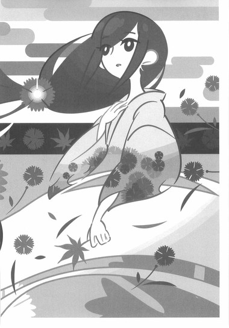
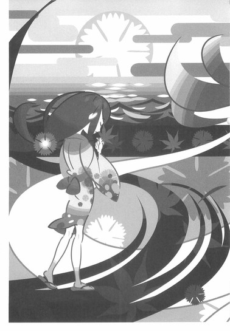
終章
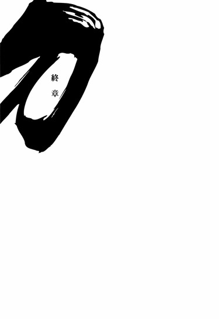
■ ■
卯月ももう終わろうという頃。
九州地方、豊前の船着場に周囲の目を引くふたり組の姿があった。ひとりは派手な衣装に身を包んだ、海風に白髪たなびく若い女、もうひとりは総髪で上半身はだかの、とにかく図体のでかい男──もちろん、そんな奇妙なふたり組が、日本広しといえども、ほかにいるわけもない。
奇策士とがめと、虚刀流七代目当主、鑢七花である。
ふたりは明らかに何かをやり遂げた人間の顔をして、静かに海を眺めている。それは少し前、周防にいた頃から比べれば、別人と言ってもいいほどの成長を匂わせる、そんなたたずまいだった。
「しかし、それにしても大変な戦いだった......」
そう口火を切ったのは、とがめだった。
それを受けて七花も、
「ああ、大変な戦いだった」
と、感慨探そうに同意した。
「さすが日本最強と謳われるだけのことはある──今まででもっとも厳しい戦いだった。錆白兵──おれはその名を生涯忘れることはないだろう」
「うむ──まさに紙一重の勝利だった。聖地・巌流島にまた新しい歴史が刻まれたと言っても過言ではないな......」
「まったく、首の皮一枚の戦いとはまさにあのことだ。とがめの作戦がなかったら、今頃おれは生きちゃいないだろう」
「なにを言う、そなたの剣技あってこそのわたしの奇策だ。あの作戦があそこまで思惑通りにはまるとは、わたしも思ってはいなかった。ふふ、わたしはそなたのことを見直したぞ」
「おれはとがめに惚れ直したぜ」
「言うな言うな。しかしまあ、錆白兵と一対一で剣技を競い、打ち勝ったのだ。これでそなたは名実ともに、日本最強を襲名したということになるな」
「日本最強か......あまり実感はないがな。それにしても、錆がこのおれに対して披露した数々の剣技には心の底から驚かされたぜ──立ち合いの最初から見せた、あの移動法──爆縮地、あれには驚愕のひとことだ。まさか『杜若』よりも自在な足運びがあったとはな──」
「技と言うならわたしはあれだな、刀の柄と鞘とを使用しての逆転夢斬が印象深い。あの技を会得した際に錆は剣聖の称号を得たというが、まさにしかり」
「いやいや、刀の刃渡、その伸縮を自由自在にできるというあの妙技、速遅剣こそ、虚刀流にとっては脅威だった──なにせ固定された刀でありながら、間合いのはかりようがないってんだから。あるいは、宇練銀閣の零閃とはまったくおもむきを異にする独自の居合い抜き、一揆刀銭──あのとき偶然おれの足場が崩れていなかったらと思うと、ぞっとするぜ......」
「決まるかと思ったそなたの手刀の切っ先を完全に見切ったあの受け太刀、刃取りも圧巻だった。二十歳の若さで、しかもともすればわたしとさほど変わらないくらいの体つきでありながらあれほどの動きを見せるとは──勝ちはしたものの、わたしたちはおそらく、あの堕剣士の恐ろしさの、一分も味わってはおらんのだろう」
「そうだな、正直言って勝った気が全然しない──実感が本当にない。今回の戦いは、残念ながら運がよかったとさえ言えないぜ」
「まったくもってその通りだ。わたしたちはただ、負けなかっただけに過ぎん」
「そして何よりの白眉は、言うまでもなく四季崎記紀の完成形変体刀十二本が一本、薄刀『針』だからこそ実現したあの奥義、薄刀開眼だろうな。まさか、見た目の美麗さのみが取り柄の、脆く弱いだけの刀だと思っていた薄刀に、あんな利点と特性があったとは夢にも思わなかったぜ。使い方次第じゃどんななまくらでも名刀になると聞くが、それどころじゃねえ──おれは初めて、剣士の怖さを思い知ったような気がする」
「そうだな。錆の剣は空に浮かぶ太陽をすら切り裂くというあの触れ込み、本当のことを言うとわたしも信じてはいなかったが──見込みが甘かった。あの奥義ならば、それも不可能ではないのかもしれぬ──されど！されどだ！過程はどうあれ、わたしたちは結果として、その薄刀を手にしたのだ......三の構え『躑躅』からの奥義、『百花繚乱』......今度こそはこの眼でしかと見せてもらった！錆白兵を正面からの果たし合いで打ち破ったこと、これは誇るべきことだぞ！」
「かもしれねえ。そうでなけりゃ、錆もまた浮かばれねえだろうしな──だが、それにしても奴が死に際に言っていた台詞が気になるぜ......死に際のひとことなんてもんじゃねえ。おれが......否、虚刀流が伝説の刀鍛冶、四季崎記紀の『遺品』だとは、いったいどういう意味なんだ？『記紀の血統』とは、いったい......、錆は、自分のことを出来損ないの失敗作だと言っていたが──あいつは刀の毒に冒されて、とがめを裏切ったんじゃなかったのか？」
「わからん──刀の毒に冒されていたこと自体はまず間違いはないが、ひょっとすると、錆には錆で、わたしたちには思いもよらない、よんどころなき事情があったのやもしれぬ......それも、奴の言葉を信じるなら、旅を続けるうちに明らかになるのであろう」
「そうだな、薄刀『針』も無事に、割ることもなく壊すこともなく、傷ひとつつけずに蒐集することができたし──これで変体刀も四本目。ちょっと終わりが見えてきたんじゃねえか」
「気持ちはわかるが調子に乗るものではないぞ。わたしたちの旅はまだまだこれからだ──そうだな、折角九州まで来たのだ、景気づけにもう一本、変体刀を蒐集するとしよう」
「ああ、わかった。異論はねえぜ」
そしてふたりはがしっと、互いの腕と腕をぶつけあう。苦しいいくさ場を共に駆け抜けた者同士の間にしか生じない強固な絆が、ふたりの間に生まれた、それは証とも言える音だった。とがめと七花は一回りもふた回りも大きくなったように見える背中から、これ以上ない気風を漂わせながら、船着場をあとにする──
次の目的地は薩摩。
蒐集対象は、絶対無双の防御力を誇る賊刀『鎧』。
対戦相手は海賊船の船長──奇策士と虚刀流による刀集めの旅も導入部を終え、いよいよ中盤戦に突入する。
とはいえ、七花はひそかに思うのだった。
日本最強、錆白兵。
それでも姉ちゃんほどじゃなかったな、と。
■ ■
こうして鑢七花は錆白兵を打ち破り、名実ともに日本最強の剣士の座を襲名した──彼女のいない日本における、最強の剣士の座を。
鑢家家長、鑢七実。
彼女が四季崎記紀の完成形変体刀十二本のうち、最も凶悪と言われる悪刀『鐚』を携え、彼の前に立ちふさがるのは──この三ヵ月後のことである。
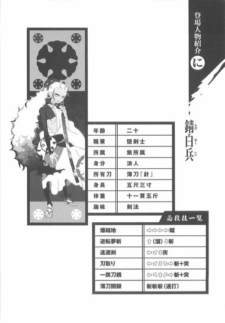
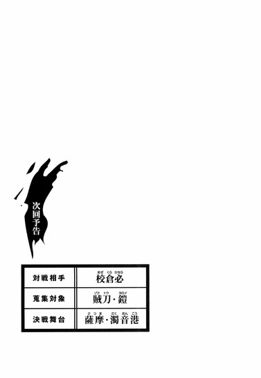
アトガタリ
エイプリルフールというのは言わずと知れた万愚節のことですが、しかし『嘘をついてもいい日』なんて、考えた人はともかくとして定着させた人は偉大だなあと思います。『嘘をついてもいい』って......あまりにも率直過ぎるこのルールをどうやって人口に膾炙させたのでしょうか。にわかには想像がつきません。軽く調べた限りではどうも由来は特定できない感じなのですが、どうなのでしょう、しかしあえて『嘘をついていい』などと言われると逆に嘘をつきにくくなるのも事実です。これから何かをやろうとしているときに他人から「やれ」と言われるとやる気がなくなってしまうのと同じなのでしょうか。逆にと言うなら、万愚節を嘘をついていい日と位置づけることによって、それ以外の日は嘘をついてはならないと、逆説的に、そして遠まわしに言い含めているのかもしれません。ただ、この辺が嘘というものの厄介なところで、嘘というのは普段からついていないと（つきなれていないと）簡単に露見するものなのです。ある特定の一日だけ嘘をつくというのは案外難しいものです──普段からの鍛錬が必要であり重要なのであるなんて、そんな仰々しい話ではまったくありませんが、しかし構造としては似通っているかもしれません。要するに普段から嘘ばっかりついていればどれが嘘なのかわからなくなるということでもありますが、ただ、ここで問題となるのは本人に自覚がない状態で嘘をついている場合です。勘違いや誤解から生じる嘘というものもあれば、言っているうちに本人もそれを信じてしまうケースもあります。そういうあれこれまで含めて考えると、嘘をつかない人間などいるわけもなく、どんな人間でも一日に最低一回、もっとありていに言えば日常的に恒常的に日単位ではなく分単位で嘘をついているわけです。その全てを見抜くことなんて論理的にというよりは物理的に不可能であり、だから人の言うことを信じるという行為は、どちらかと言うとあきらめに近いものがあるような気もします。そう考えると、エイプリルフールというのは『嘘をついてもいい日』というよりは『嘘をつかれても我慢する日』なのかもしれません。しかしどうでもいいですけれど、エイプリルフールを万愚節と訳した人は、定着させた人よりも偉大ですよね。
本書は『刀語』の第四巻です。鑢七花と奇策士とがめの旅もいつの間にやら四ヵ月目ということで、色々と物語は展開されています。全十二巻予定なので、これで三分の一までタイムテーブルが進行したわけですが、あと三分の二、八話も残されているのか、彼らの旅もまだまだこれからだなと思う反面、なんとなく残りの話数が足りないような、彼らの旅ももう終わりが近づいてきているような気もしています。竹さんのイラストももっと見たいところですし、せっかくですから全二十四話計画に変更しようかとも思いますが、そうすると刀の数が足りなくなるのが考えものです。僕は本が出版されることを奇跡と呼んでいますが、その奇跡が四度起こっただけでも、まあ既に十分でしょう。
あと八度、奇跡が起きることを祈ります。
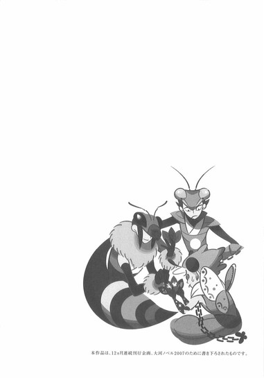
底本：刀語 第四話 薄刀・針
西尾維新
２００７年４月１日第１刷発行